# Load necessary packages
library(tidyverse)
library(readxl)
library(dynlm)
library(vars)
library(urca)
library(modelsummary)
library(tsDyn)
options("modelsummary_factory_default" = "gt")
library(gridExtra)
library(knitr)
library(haven)
library(fGarch)
library(rugarch)
library(forecast)
library(tseries)26 Additional Topics in Time Series Regression
26.1 Introduction
In this chapter, we consider some selected topics in time series analysis. We cover vector autoregression (VAR), multi-period forecasting, cointegration and error correction models, volatility clustering, and autoregressive conditional heteroskedasticity models.
26.2 Vector Autoregressions
26.2.1 VAR models
VARs are introduced by Sims (1980). A VAR model is a generalization of the univariate ADL model to multiple time series. The VAR model for \(k\) variables is a set of \(k\) ADL models that are estimated simultaneously. If the number of lags is \(p\) in each equation in the VAR model, the model is called a VAR(\(p\)) model. For example, in the case of two variables \(Y_t\) and \(X_t\), the VAR(\(p\)) model is given by \[ \begin{align*} Y_t &= \beta_{10}+\beta_{11}Y_{t-1}+\beta_{12}Y_{t-2}+\cdots+\beta_{1p}Y_{t-p}+\gamma_{11}X_{t-1}+\cdots+\gamma_{1p}X_{t-p}+u_{1t},\\ X_t &= \beta_{20}+\beta_{21}Y_{t-1}+\beta_{22}Y_{t-2}+\cdots+\beta_{2p}Y_{t-p}+\gamma_{21}X_{t-1}+\cdots+\gamma_{2p}X_{t-p}+u_{2t}, \end{align*} \tag{26.1}\] where \(\beta\)’s and \(\gamma\)’s are unknown parameters, and \(u_{1t}\) and \(u_{2t}\) are the error terms.
Using matrix notation, we can express the two-variable VAR(\(p\)) as \[ \begin{align*} & \begin{pmatrix} Y_t\\ X_t \end{pmatrix} = \begin{pmatrix} \beta_{10}\\ \beta_{20} \end{pmatrix} + \begin{pmatrix} \beta_{11}&\gamma_{11}\\ \beta_{21}&\gamma_{21} \end{pmatrix} \times \begin{pmatrix} Y_{t-1}\\ X_{t-1} \end{pmatrix} +\ldots+ \begin{pmatrix} \beta_{1p}&\gamma_{1p}\\ \beta_{2p}&\gamma_{2p} \end{pmatrix} \times \begin{pmatrix} Y_{t-p}\\ X_{t-p} \end{pmatrix} + \begin{pmatrix} u_{1t}\\ u_{2t} \end{pmatrix}. \end{align*} \]
Then, we can express the model with the following compact form: \[ \begin{align} \bs{Y}_t=\bs{B}_0+\bs{B}_1\bs{Y}_{t-1}+\ldots+\bs{B}_{p}\bs{Y}_{t-p}+\bs{u}_t, \end{align} \tag{26.2}\] where \[ \begin{align*} \bs{Y}_t= \begin{pmatrix} Y_t\\ X_t \end{pmatrix},\, \bs{B}_0= \begin{pmatrix} \beta_{10}\\ \beta_{20} \end{pmatrix},\, \bs{B}_j= \begin{pmatrix} \beta_{1j}&\gamma_{1j}\\ \beta_{2j}&\gamma_{2j} \end{pmatrix},\,\text{and}\, \bs{u}_t= \begin{pmatrix} u_{1t}\\ u_{2t} \end{pmatrix}, \end{align*} \] for \(j=1,2,\ldots,p\).
The VAR(\(p\)) in Equation 26.2 is called the reduced-form VAR(\(p\)) or the VAR(\(p\)) in standard form.
We can use the OLS estimator to estimate each equation in a VAR model. The assumptions required for estimating the VAR model are the same as those outlined in Section 24.8 for the ADL model. In particular, each variable in the model must be stationary. In large samples, the OLS estimator is consistent and asymptotically normal. Consequently, inference can be conducted as in a multiple regression model.
26.2.2 Granger causality
The structure of the VAR model reveals how a variable or a group of variables can help predict or forecast others. The following intuitive notion of prediction ability is due to Granger (1969) and Sims (1972).
Definition 26.1 (Granger Causality) If \(Y_t\) improves the prediction of \(X_t\), then \(Y_t\) is said to Granger-cause \(X_t\); otherwise, it is said to fail to Granger-cause \(X_t\).
We note that this notion of Granger causality does not correspond to the concept of causality defined in Chapter 22. Instead, it only reflects the predictive ability of variables. In our two-variable VAR model, we can test for whether \(Y_t\) Granger causes \(X_t\) by formulating the following null and alternative hypotheses: \[ \begin{align*} &H_0:\beta_{21}=\beta_{22}=\ldots=\beta_{2p}=0,\\ &H_1:\text{At least one parameter is not zero}. \end{align*} \] We can resort to the \(F\)-statistic to test the null hypothesis.
26.2.3 Model formulation
When formulating a VAR model, we usually face the following issues:
- How many variables should be included in the model?
- What is the appropriate number of lags to include in the model?
- Which variables should be included in the model?
Although the modeling process depends on the specific research question and available data, Stock and Watson (2020) provide a general guideline for formulating a VAR model. For the first and second questions, we need to note that the number of parameters to estimate increases with both the number of VAR variables and the number of lags. For example, in a VAR(\(2\)) model with two variables, there are 10 parameters to estimate, whereas in a VAR(\(2\)) model with three variables, this number increases to 18. If the sample size is small and the number of parameters is large, the OLS estimator may not accurately estimate all parameters. Therefore, when using the OLS estimator, the number of VAR variables should be kept small so that the number of parameters remains relatively low compared to the sample size.
To determine the number of lags, we can use information criteria. Specifically, we consider the Bayesian Information Criterion (BIC) and the Akaike Information Criterion (AIC), which are defined as follows: \[ \begin{align} &\text{BIC}(p)=\ln\left(\text{det}(\hat{\Sigma}_u)\right)+k(kp+1)\ln(T)/T,\\ &\text{AIC}(p)=\ln\left(\text{det}(\hat{\Sigma}_u)\right)+2k(kp+1)/T, \end{align} \] where \(k\) is the number of VAR variables, \(\text{det}(\hat{\Sigma}_u)\) is the determinant of \(\hat{\Sigma}_u\), and \(\hat{\Sigma}_u\) is the estimated covariance matrix of the VAR error terms. The \((i,j)\)th element of \(\hat{\Sigma}_u\) is \(\frac{1}{T}\sum_{t=1}^T\hat{u}_{it}\hat{u}_{jt}\), where \(\hat{u}_{it}\) is the OLS residuals from the \(i\)th equation and \(\hat{u}_{jt}\) is the OLS residuals from the \(j\)th equation. We can then test a set of candidate values for \(p\) and choose the one that minimizes BIC(\(p\)) or AIC(\(p\)).
For the third question, we should use economic theory to select VAR variables that are related to each other so they can effectively predict and forecast one another. We can apply the Granger causality test and include variables that Granger-cause each other. Including variables that do not Granger-cause each other can introduce estimation errors, thereby reducing the model’s forecasting ability.
26.2.4 Structural VAR models
So far, we have only considered using VAR models for prediction and forecasting. However, VAR models can also be used to study causal relationships among the VAR variables. This type of VAR model is called a structural VAR model (SVAR). SVAR models are typically used to analyze the dynamic effects of a structural shock in one variable on the other VAR variables. These models require assumptions to specify which VAR variables are exogenous. For further discussion on SVAR models, see Lütkepohl (2005) and Hansen (2022).
26.2.5 An empirical application
In this section, we consider a VAR(\(2\)) model for the GDP growth rate (GDPGR) and the term spread (TSpread) for the U.S. economy. The model takes the following form: \[
\begin{align*}
&\text{GDPGR}_t=\beta_{10}+\beta_{11}\text{GDPGR}_{t-1}+
\beta_{12}\text{GDPGR}_{t-2}+\gamma_{11}\text{TSpread}_{t-1}+\gamma_{12}\text{TSpread}_{t-2}+u_{1t},\\
&\text{TSpread}_t=\beta_{20}+\beta_{21}\text{GDPGR}_{t-1}+
\beta_{22}\text{GDPGR}_{t-2}+\gamma_{21}\text{TSpread}_{t-1}+\gamma_{22}\text{TSpread}_{t-2}+u_{2t}.
\end{align*}
\] The GDGGR variable is contained in the GrowthRate.csv file, and the TSpread variable is available in the TermSpread.csv file. The GrowthRate.csv file contains data on the following variables:
Y: Logarithm of real GDPYGROWTH: Annual real GDP growth rateRECESSION: Recession indicator (1 if recession, 0 otherwise)
# Load the GrowthRate data
dfGrowth <- read_excel("data/GrowthRate.xlsx")
# Convert to a quarterly time-series object starting in 1960 Q1
dfGrowth <- ts(dfGrowth, start = c(1960, 1), frequency = 4)
# Display column names
colnames(dfGrowth)[1] "Period" "Y" "YGROWTH" "RECESSION"The TermSpread.csv file includes data on the following variables:
GS10: Interest rate on 10-year US Treasury bondsTB3MS: Interest rate on 3-month Treasury billsRSPREAD: Term-spread (GS10-TB3MS)RECESSION: Dummy variable indicating recession periods
# Load the TermSpread data
dfTermSpread <- read.csv("data/TermSpread.csv", header = TRUE)
# Convert to a quarterly time-series object starting in 1960 Q1
dfTermSpread <- ts(dfTermSpread, start = c(1960, 1), frequency = 4)
# Display column names
colnames(dfTermSpread)[1] "Period" "GS10" "TB3MS" "RSPREAD" "RECESSION"In the following, we merge the two datasets into a single dataset and plot the GDP growth rate and the term spread. The resulting plots are shown in Figure 26.1, with shaded areas indicating recession periods. The figure illustrates that the GDP growth rate fluctuates over time and is often negative during recessions. Similarly, the term spread varies over time and tends to be negative during recession periods.
# Merge the data
data <- cbind(dfGrowth, dfTermSpread)
# Rename the column names
colnames(data) <- c("Period_x", "Y", "YGROWTH", "RECESSION_x", "Period_y", "GS10", "TB3MS", "RSPREAD", "RECESSION_y")# Convert ts object to data frame for ggplot
data_df <- data.frame(
Date = as.yearqtr(time(data)),
YGROWTH = as.numeric(data[, "YGROWTH"]),
RSPREAD = as.numeric(data[, "RSPREAD"]),
RECESSION_x = as.numeric(data[, "RECESSION_x"]),
RECESSION_y = as.numeric(data[, "RECESSION_y"])
)
# Plot GDP growth rate
p1 <- ggplot(data_df, aes(x = Date, y = YGROWTH)) +
geom_line(color = "steelblue", linewidth = 1) +
geom_hline(yintercept = 0, linetype = "dashed", color = "black") +
geom_rect(
data = subset(data_df, RECESSION_x == 1),
aes(xmin = Date - 0.125, xmax = Date + 0.125, ymin = -Inf, ymax = Inf),
fill = "steelblue", alpha = 0.3, inherit.aes = FALSE
) +
labs(title = "The GDP growth rate", x = "Date", y = "Percentage")
# Plot Term Spread
p2 <- ggplot(data_df, aes(x = Date, y = RSPREAD)) +
geom_line(color = "steelblue", linewidth = 1) +
geom_hline(yintercept = 0, linetype = "dashed", color = "black") +
geom_rect(
data = subset(data_df, RECESSION_y == 1),
aes(xmin = Date - 0.125, xmax = Date + 0.125, ymin = -Inf, ymax = Inf),
fill = "steelblue", alpha = 0.3, inherit.aes = FALSE
) +
labs(title = "Term spread", x = "Date", y = "Percentage rate")
# Arrange plots vertically
grid.arrange(p1, p2, ncol = 1)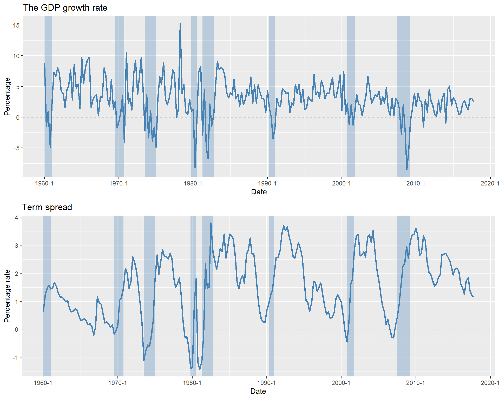
Although our model is a VAR(\(2\)) model, we can check whether the information criteria return the same number of lags. In the following, we use the VARselect function from the vars package to select the number of lags. The results show that both the BIC (SC) and the AIC suggest two lags, which is consistent with our model specification.
# Select the sample period
varData <- window(data[, c("YGROWTH", "RSPREAD")],
start = c(1981, 1),
end = c(2017, 3)
)
# Lag order selection (up to 4 lags)
lag_selection <- VARselect(varData, lag.max = 4, type = "const")
# Print results
lag_selection$selection
AIC(n) HQ(n) SC(n) FPE(n)
2 2 2 2
$criteria
1 2 3 4
AIC(n) 0.1576071 0.03941016 0.09016937 0.08419334
HQ(n) 0.2081228 0.12360304 0.20803940 0.23574052
SC(n) 0.2819222 0.24660209 0.38023808 0.45713882
FPE(n) 1.1707205 1.04025637 1.09453104 1.08820171We then use the VAR function from the vars package to estimate the VAR(\(2\)) model. The estimation results are shown in (tab-chapter26-1?). In the YGROWTH equation, all estimated coefficients are statistically significant at the 5% level, indicating that the GDP growth rate can be forecasted using its own lagged values and the lagged values of the term spread. In the RSPREAD equation, except for the first lag of YGROWTH, all other estimated coefficients are statistically significant at the 5% level.
# Fit the VAR model with lag = 2
var_model <- VAR(varData, p = 2, type = "const")# Display the summary of the VAR model
modelsummary(var_model$varresult,
fmt = 3,
stars = TRUE
)| YGROWTH | RSPREAD | |
|---|---|---|
| YGROWTH.l1 | 0.308*** | 0.010 |
| (0.077) | (0.016) | |
| RSPREAD.l1 | -0.770* | 1.033*** |
| (0.378) | (0.079) | |
| YGROWTH.l2 | 0.236** | -0.055*** |
| (0.075) | (0.016) | |
| RSPREAD.l2 | 1.068** | -0.199* |
| (0.368) | (0.077) | |
| const | 0.657 | 0.453*** |
| (0.438) | (0.092) | |
| Num.Obs. | 145 | 145 |
| R2 | 0.305 | 0.804 |
| R2 Adj. | 0.285 | 0.798 |
| AIC | 654.6 | 202.6 |
| BIC | 672.4 | 220.4 |
| Log.Lik. | -321.294 | -95.293 |
| RMSE | 2.22 | 0.47 |
| + p < 0.1, * p < 0.05, ** p < 0.01, *** p < 0.001 | ||
Although all information criteria suggest two lags, we can still use autocorrelation tests to check whether there is any remaining correlation in the error terms. To that end, we use the Ljung-Box test to check for serial correlation in the residuals. Since the p-values are greater than 0.05, we fail to reject the null hypothesis of no serial correlation in the residuals.
# Extract residuals for the YGROWTH equation
res_y <- residuals(var_model$varresult$YGROWTH)
# Ljung-Box test with 4 lags
Box.test(res_y, lag = 4, type = "Ljung-Box")
Box-Ljung test
data: res_y
X-squared = 0.74344, df = 4, p-value = 0.9459# Extract residuals for the RSPREAD equation
res_r <- residuals(var_model$varresult$RSPREAD)
# Ljung-Box test with 4 lags
Box.test(res_r, lag = 4, type = "Ljung-Box")
Box-Ljung test
data: res_r
X-squared = 3.4924, df = 4, p-value = 0.479In the following, we use the serial.test function, which provides a portmanteau test for testing the overall significance of the residual autocorrelations up to the fourth lag. The results show that there is no serial correlation in the residuals.
# Overall test for residual autocorrelation up to lag 4
serial_test <- serial.test(var_model, lags.pt = 4, type = "PT.asymptotic")
# Display results
serial_test
Portmanteau Test (asymptotic)
data: Residuals of VAR object var_model
Chi-squared = 7.795, df = 8, p-value = 0.4537Thus, both Box.test and serial.test tests indicate that there is no serial correlation in the residuals, suggesting that two lags are sufficient to capture the dynamics of the GDP growth rate and the term spread.
Next, to determine whether TSpread Granger-causes GDPGR, we use the \(F\)-statistic for the following null and alternative hypotheses: \[
\begin{align}
&H_0: \gamma_{11}=\gamma_{12}=0,\\
&H_1:\,\,\text{At least one parameter is different from zero}.
\end{align}
\]
This test is conducted using the causality function from the vars package. Since the p-value is less than 0.05, we reject the null hypothesis and conclude that TSpread Granger-causes GDPGR.
# Granger causality test: Does RSPREAD Granger-cause YGROWTH?
gtest <- causality(var_model, cause = "RSPREAD")
# Display results
gtest$Granger
Granger causality H0: RSPREAD do not Granger-cause YGROWTH
data: VAR object var_model
F-Test = 4.8842, df1 = 2, df2 = 280, p-value = 0.008222We can use the predict function with the option n.ahead = 5 to forecast the GDP growth rate and the term spread for the next 5 periods. The forecasted values are plotted in Figure 26.2.
# Forecast for the next 5 periods
# Produce 5-step-ahead forecasts
fc <- predict(var_model, n.ahead = 5)# Display the forecasted values for GDP growth rate
forecast_growth <- ts(fc$fcst$YGROWTH, start = c(2017, 4), frequency = 4)
rownames(forecast_growth) <- c("2017 Q4", "2018 Q1", "2018 Q2", "2018 Q3", "2018 Q4")
kable(forecast_growth, digits = 3)| fcst | lower | upper | CI | |
|---|---|---|---|---|
| 2017 Q4 | 2.865346 | -1.560028 | 7.290720 | 4.425374 |
| 2018 Q1 | 2.568107 | -2.108272 | 7.244487 | 4.676380 |
| 2018 Q2 | 2.423284 | -2.467971 | 7.314540 | 4.891255 |
| 2018 Q3 | 2.345198 | -2.646450 | 7.336846 | 4.991648 |
| 2018 Q4 | 2.323640 | -2.728332 | 7.375612 | 5.051972 |
# Display the forecasted values for the term spread
forecast_spread <- ts(fc$fcst$RSPREAD, start = c(2017, 4), frequency = 4)
rownames(forecast_spread) <- c("2017 Q4", "2018 Q1", "2018 Q2", "2018 Q3", "2018 Q4")
kable(forecast_spread, digits = 3)| fcst | lower | upper | CI | |
|---|---|---|---|---|
| 2017 Q4 | 1.293331 | 0.36212181 | 2.224540 | 0.9312089 |
| 2018 Q1 | 1.408409 | 0.06743861 | 2.749380 | 1.3409705 |
| 2018 Q2 | 1.520251 | -0.04790366 | 3.088406 | 1.5681546 |
| 2018 Q3 | 1.627686 | -0.09431688 | 3.349688 | 1.7220025 |
| 2018 Q4 | 1.723549 | -0.10123707 | 3.548334 | 1.8247857 |
plot(fc,
names = "YGROWTH",
main = "", lwd = 2
)
plot(fc,
names = "RSPREAD",
main = "", lwd = 2
)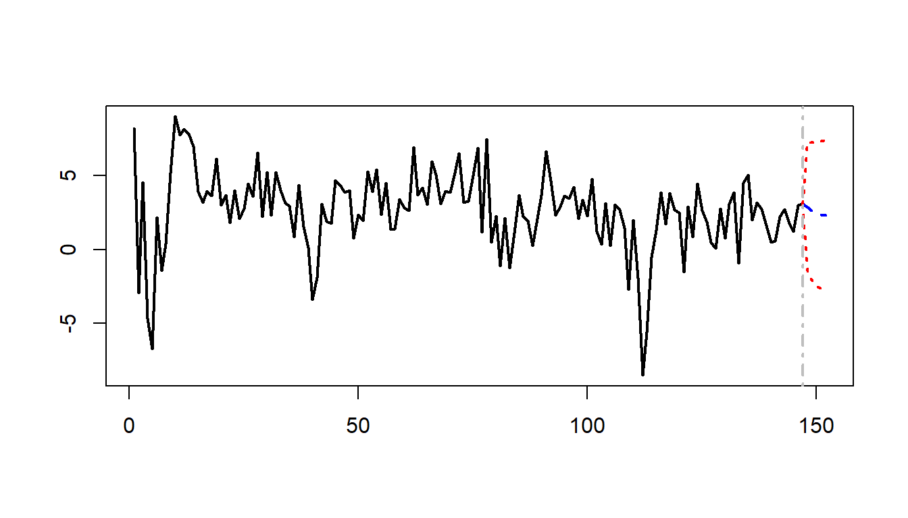
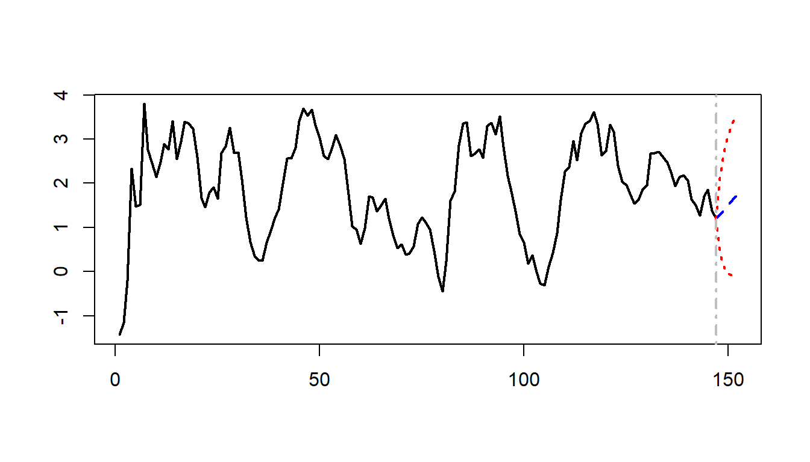
The fanchart function from the vars package can be used to present forecasts with differently shaded confidence regions. Figure 26.3 shows the fancharts.
fanchart(fc,
names = "YGROWTH",
main = NA, lwd = 2
)
fanchart(fc,
names = "RSPREAD",
main = NA, lwd = 2
)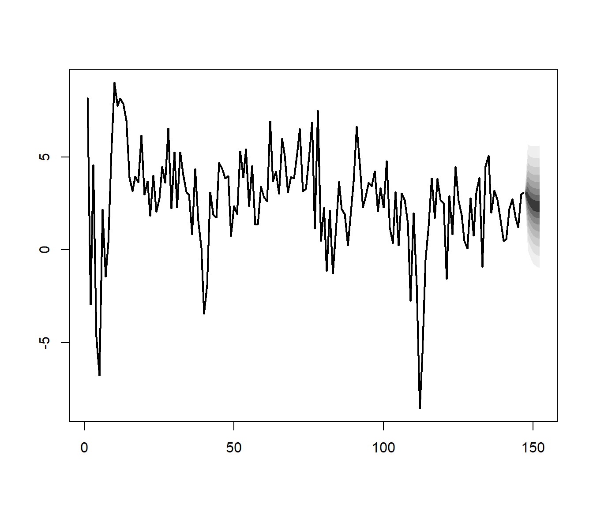
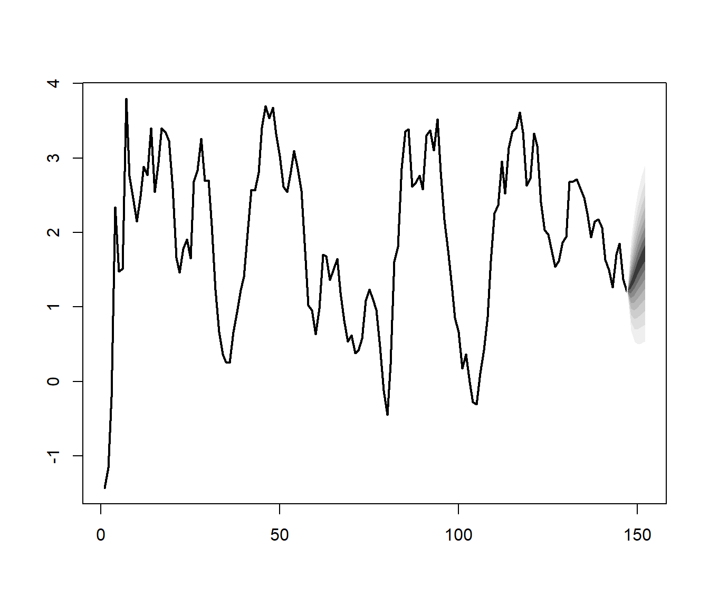
Finally, we consider the effect of a shock in the term spread on the GDP growth rate. Suppose that we are willing to assume that GDPGR has a contemporaneous effect on TSpread but TSpread affects the GDPGR sequence with a one-period lag. To impose such an assumption, we need to order the variable such that GDPGR is the first column in varData (which is the case). That is, the order of variables in the system is important, and the variable that has the contemporaneous effect should be the first variable in the system.
The effect of a shock in TSpread on GDPGR can be analysed through the impulse-response analysis. To that end, we can use the irf function from the vars package. The response function of GDPGR is plotted in Figure 26.4. The plot shows that a shock in the term spread has a negative effect on the GDP growth rate in the first period.
# Compute impulse response functions
irf_res <- irf(
var_model,
impulse = "RSPREAD",
response = "YGROWTH",
n.ahead = 10,
ortho = TRUE
)
# Plot IRFs
plot(irf_res, cex.axis = 0.5, cex.lab = 0.8)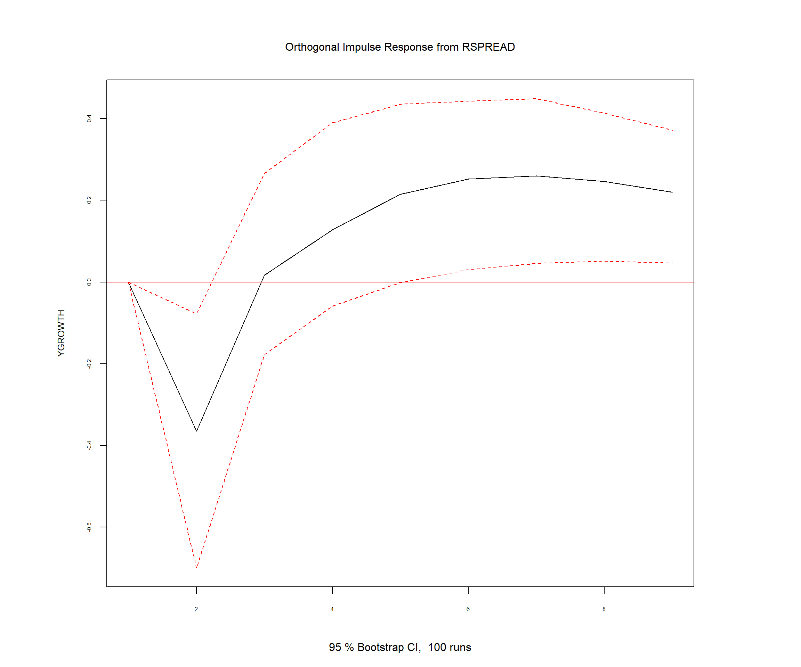
26.3 Multi-period forecasts
In this section, we discuss two forecasting methods for generating multi-period forecasts: the iterated method and the direct method. In the iterated method, we first forecast the next period’s value and then use this forecast to predict the value for the subsequent period. This process is repeated until the desired forecast horizon is reached. For example, the one-period, two-period, and three-period-ahead iterated forecasts based on an AR(\(p\)) model are computed as follows: \[ \begin{align*} &\hat{Y}_{T+1|T}=\hat{\beta}_0+\hat{\beta}_1Y_{T}+\hat{\beta}_2Y_{T-1}+\hat{\beta}_3Y_{T-2}+\ldots+\hat{\beta}_pY_{T-p+1},\\ &\hat{Y}_{T+2|T}=\hat{\beta}_0+\hat{\beta}_1{\color{steelblue} \hat{Y}_{T+1|T}}+\hat{\beta}_2Y_T+\hat{\beta}_3Y_{T-1}+\ldots+\hat{\beta}_pY_{T-p+2},\\ &\hat{Y}_{T+3|T}=\hat{\beta}_0+\hat{\beta}_1{\color{steelblue}\hat{Y}_{T+2|T}}+\hat{\beta}_2{\color{steelblue}\hat{Y}_{T+1|T}} +\hat{\beta}_3Y_{T}+\ldots+\hat{\beta}_pY_{T-p+3}, \end{align*} \] where the \(\hat{\beta}\)’s are the OLS estimates of the AR(\(p\)) coefficients. Note that we use the forecast \(\hat{Y}_{T+1|T}\) to compute the two-step-ahead forecast and the forecasts \(\hat{Y}_{T+1|T}\) and \(\hat{Y}_{T+2|T}\) to compute the three-step-ahead forecast. We can continue this process (iterating) to produce forecasts further into the future.
Using the same approach, we can also generate multi-period forecasts for VAR models. We need to first compute the one-step ahead forecast for all variables in the VAR model. Then, we use these forecasts to generate the two-step ahead forecast, and so on. For example, in our two-variable VAR(\(p\)) model in Equation 26.1, the two-step ahead forecast for \(Y_t\) is \[ \begin{align*} \hat{Y}_{T+2|T}&= \hat{\beta}_{10}+\hat{\beta}_{11}\hat{Y}_{T+1|T}+\hat{\beta}_{12}Y_{T}+\cdots+\hat{\beta}_{1p}Y_{T+2-p}\\ &+\hat{\gamma}_{11}\hat{X}_{T+1|T}+\hat{\gamma}_{12}X_T+\cdots+\hat{\gamma}_{1p}X_{T+2-p}, \end{align*} \] where \(\hat{Y}_{T+1|T}\) and \(\hat{X}_{T+1|T}\) are the one-step ahead forecasts of \(Y_{T+1}\) and \(X_{T+1}\), respectively.
In the VAR(\(2\)) model that we consider in Section 26.2.5 for the GDP growth rate and the term spread, we use the predict function to generate multi-period forecasts. We report the forecasted values in Table 26.2 and Table 26.3, and the forecast plots in Figure 26.2.
In the direct method, we generate the multi-period forecasts using a single regression with the dependent variable being the variable to be forecasted at the forecast horizon and the regressors are predictors lagged at the forecast horizon. Consider the first equation in the VAR(\(2\)) model in Equation 26.1. Then, we can estimate the following regression model to generate \(h\)-step ahead forecasts for \(Y_t\): \[ \begin{align*} Y_t &= \delta_{0}+\delta_{1}Y_{t-h}+\delta_{2}Y_{t-h-1}+\cdots+\delta_{p}Y_{t-h-p+1}\\ &+\delta_{p+1}X_{t-h}+\cdots+\delta_{2p}X_{t-p-h+1}+u_{t}, \end{align*} \] where \(\delta\)’s are the unknown parameters. This model can be estimated by the OLS estimator. Since the error term in this regression can be autocorrelated, we need to use heteroskedasticity-and autocorrelation-consistent (HAC) standard errors to obtain valid inference. Then, the \(h\)-step ahead forecast for \(Y_t\) is given by \[ \begin{align*} \hat{Y}_{T+h|T} &= \hat{\delta}_{0}+\hat{\delta}_{1}Y_{T}+\hat{\delta}_{2}Y_{T-1}+\cdots+\hat{\delta}_{p+1}Y_{T-p+1}\\ &+\hat{\delta}_{p+1}X_{T}+\cdots+\hat{\delta}_{2p}X_{T-p+1}. \end{align*} \]
In practice, the iterated method is preferred over the direct method for two reasons (Stock and Watson 2020). First, if the postulated model is correct, the iterated method can produce more accurate forecasts than the direct method because the postulated model is estimated more efficiently in the iterated method. Second, the iterated method tends to produce smoother forecasts. In contrast, the direct approach requires estimating a separate regression for each forecast horizon, which can result in greater forecast volatility compared to the iterated method.
26.4 Orders of integration
We introduced the random walk model for the stochastic trend in Chapter 24. The version with a drift is specified as \[ \begin{align} Y_t = \beta_0+Y_{t-1}+u_t, \end{align} \tag{26.3}\] where \(u_t\) is an error term. Although \(Y_t\) is non-stationary, its first difference \(\Delta Y_t\) is stationary. We use the order of integration to characterize the stochastic trend in a time series.
Definition 26.2 (Orders of integration) If a time series is stationary, it is said to be integrated of order zero, denoted as \(I(0)\). A time series that follows a random walk trend is said to be integrated of order one, denoted as \(I(1)\).
According to definition Definition 26.2, if \(Y_t\) is \(I(1)\), then \(\Delta Y_t\) is \(I(0)\), i.e., \(\Delta Y_t\) is stationary. Similarly, if \(Y_t\) is \(I(2)\), then \(\Delta Y_t\) is \(I(1)\), and it second difference \(\Delta^2Y_t=(\Delta Y_t-\Delta Y_{t-1})\) is \(I(0)\) i.e., \(\Delta^2Y_t\) is stationary. In general, if \(Y_t\) is integrated of order \(d\)-that is, if \(Y_t\) is \(I(d)\) -then \(Y_t\) must be differenced \(d\) times to eliminate its stochastic trend; that is, \(\Delta^dY_t\) is stationary.
26.5 Cointegration and error correction models
26.5.1 Cointegration
When two time series share the same stochastic trend, they tend to move together in the long run. The concept of cointegration describes this relationship between time series that exhibit a common stochastic trend.
Definition 26.3 (Cointegration) Suppose that \(Y_{1t}\) and \(Y_{2t}\) are \(I(1)\). If \(Y_{1t} - \theta Y_{2t}\) is \(I(0)\) for a parameter \(\theta\), then \(Y_{1t}\) and \(Y_{2t}\) are said to be cointegrated, with \(\theta\) called the cointegrating parameter.
If \(Y_{1t}\) and \(Y_{2t}\) are cointegrated, then the difference \(Y_{1t} - \theta Y_{2t}\) eliminates the common stochastic trend and therefore is stationary. We call this difference the error correction term.
26.5.2 Vector error correction models
A VAR model for the first difference of cointegrated variables can be augmented by including the error correction term as an additional regressor. Such an augmented VAR model is called a vector error correction model (VECM). The VECM for \(Y_{1t}\) and \(Y_{2t}\) is given by \[ \begin{align} &\Delta Y_{1t}=a_{1}+\delta_{11}\Delta Y_{1,t-1}+\ldots+\delta_{1p}\Delta Y_{1,t-p}+\gamma_{11}\Delta Y_{2,t-1}+\ldots+\gamma_{1p}\Delta Y_{2,t-p}\nonumber\\ &\quad\quad\quad+\alpha_1(Y_{1,t - 1} - \theta Y_{2,t-1})+u_{1t},\\ &\Delta Y_{2t}=a_{2}+\delta_{21}\Delta Y_{1,t-1}+\ldots+\delta_{2p}\Delta Y_{1,t-p}+\gamma_{21}\Delta Y_{2,t-1}+\ldots+\gamma_{2p}\Delta Y_{2,t-p}\nonumber\\ &\quad\quad\quad+\alpha_2(Y_{1,t - 1} - \theta Y_{2,t-1})+u_{2t}, \end{align} \] where \(a_{i}\), \(\delta_{ij}\), \(\gamma_{ij}\), and \(\alpha_i\) for \(i,j\in\{1,2\}\) are unknown parameters, and \(u_{1t}\) and \(u_{2t}\) are the error terms. Note that the error correction term \((Y_{1,t - 1} - \theta Y_{2,t-1})\) is included in both equations of the VECM. The parameters \(\alpha_1\) and \(\alpha_2\) are called the adjustment parameters. If \(\alpha_i\) is negative, then \(Y_{it}\) tends to adjust towards the long-run equilibrium relationship defined by the error correction term.
To express the VECM in matrix form, we define the following matrices: \[ \begin{align*} &\bs{Y}_t= \begin{pmatrix} Y_{1t}\\ Y_{2t} \end{pmatrix},\, \bs{\Delta Y}_t= \begin{pmatrix} \Delta Y_{1t}\\ \Delta Y_{2t} \end{pmatrix},\, \bs{a}= \begin{pmatrix} a_{1}\\ a_{2} \end{pmatrix},\, \bs{B}_j= \begin{pmatrix} \delta_{1j}&\gamma_{1j}\\ \delta_{2j}&\gamma_{2j} \end{pmatrix},\\ & \bs{\alpha}= \begin{pmatrix} \alpha_1\\ \alpha_2 \end{pmatrix},\, \bs{\beta}= \begin{pmatrix} 1\\ -\theta \end{pmatrix},\,\text{and}\, \bs{u}_t= \begin{pmatrix} u_{1t}\\ u_{2t} \end{pmatrix}, \end{align*} \] for \(j=1,2,\ldots,p\). Then, the VECM in matrix form is given by \[ \begin{align} \bs{\Delta Y}_t=\bs{a}+\bs{B}_1\bs{\Delta Y}_{t-1}+\ldots+\bs{B}_{p}\bs{\Delta Y}_{t-p}+\bs{\alpha}\bs{\beta}^{'}\bs{Y}_{t-1}+\bs{u}_t. \end{align} \tag{26.4}\]
In the VECM model, our goal is to use the past value of the error correction term to predict the future values of \(\bs{\Delta Y}_t\).
The augmentation of the VAR with the error correction term is not arbitrary. To see this, consider a VAR(2) model for \(k\) variables: \[ \begin{align*} \bs{Y}_t &= \bs{a} + \bs{A}_1\bs{Y}_{t-1}+\bs{A}_2\bs{Y}_{t-2}+\bs{u}_t. \end{align*} \]
Subtracting \(\bs{Y}_{t-1}\) from both sides and re-arranging, we obtain \[ \begin{align*} \bs{Y}_t - \bs{Y}_{t-1}&= \bs{a} + \bs{A}_1\bs{Y}_{t-1} - \bs{Y}_{t-1}+\bs{A}_2\bs{Y}_{t-2}+\bs{u}_t\\ &= \bs{a} - (\bs{I}_k - \bs{A}_1)\bs{Y}_{t-1}+\bs{A}_2\bs{Y}_{t-2}+\bs{u}_t\\ &= \bs{a} - (\bs{I}_k - \bs{A}_1 - \bs{A}_2)\bs{Y}_{t-1}-\bs{A}_2\bs{Y}_{t-1}+\bs{A}_2\bs{Y}_{t-2}+\bs{u}_t. \end{align*} \]
Let \(\bs{\Pi} = - (\bs{I}_k - \bs{A}_1 - \bs{A}_2)\) and \(\bs{B}_1 = -\bs{A}_2\). Then, we can express the above equation as
\[ \begin{align*} \bs{\Delta Y}_t &= \bs{a} + \bs{\Pi} \bs{Y}_{t-1} + \bs{B}_1 \bs{\Delta Y}_{t-1}+\bs{u}_t. \end{align*} \]
This last equation resembles the VECM representation in Equation 26.4 with one lag, i.e., \(p=1\). If \(\bs{Y}_t\) has a stochastic trend, then one or more of the roots of \(\operatorname{det}(\bs{\Pi})\) must be unity (Lütkepohl 2005, chap. 2). In that case, \(\bs{\Pi}\) is singular and its rank \(r\) must be less than \(k\). Hence, \(\bs{\Pi}\) can be decomposed as \(\bs{\Pi}=\bs{\alpha}\bs{\beta}^{'}\), where \(\bs{\alpha}\) and \(\bs{\beta}\) are \(k\times r\) matrices.
This decomposition of \(\bs{\Pi}\) is not unique. For any positive definite \(r\times r\) matrix \(\bs{Q}\), we can write \(\bs{\Pi}=\bs{\alpha}^\star\bs{\beta}^{\star'}\), where \(\bs{\alpha}^\star = \bs{\alpha}\bs{Q}\) and \(\bs{\beta}^{\star}=\bs{\beta}\bs{Q}^{-1}\). Therefore, cointegration relations are not unique. To avoid this problem, restrictions on \(\bs{\beta}\) and/or \(\bs{\alpha}\) can be imposed. Normalizing the first component of \(\bs{\beta}\) to unity in the definition above serves to avoid the identification problem.
26.5.3 Estimating the cointegrating parameter
In order to form a VECM, we first need to check whether the variables are cointegrated. We can use the following two-step approach to decide whether \(Y_{1t}\) and \(Y_{2t}\) are cointegrated:
Step 1: Estimate the cointegrating coefficient \(\theta\) by the OLS estimator from the regression \[ \begin{align} Y_{1t} = \mu_0 + \theta Y_{2t} + v_t, \end{align} \tag{26.5}\] where \(\mu_0\) is the intercept term, and \(v_t\) is the error term.
Step 2: Compute the residual \(\hat{v}_t\). Then, use the ADF test (with an intercept but no time trend) to test whether \(\hat{v}_t\) is stationary. In Table 26.4, we provide the critical values for the ADF statistic.
If \(\hat{v}_t\) is \(I(0)\), then we conclude that \(Y_{1t}\) and \(Y_{2t}\) are cointegrated. This two-step procedure is called the Engle-Granger Augmented Dickey-Fuller test (EG-ADF test) for cointegration.
| Number of X’s in Equation 26.6 | 10% | 5% | 1% |
|---|---|---|---|
| 1 | -3.12 | -3.41 | -3.96 |
| 2 | -3.52 | -3.80 | -4.36 |
| 3 | -3.84 | -4.16 | -4.73 |
| 4 | -4.20 | -4.49 | -5.07 |
We estimate the cointegrating parameter \(\theta\) in the two-step procedure by the OLS estimator. If the variables are cointegrated, the OLS estimator is consistent but has a non-standard distribution (see Theorem 16.19 in Hansen (2022)). There is also an alternative estimator called the dynamic OLS (DOLS) estimator, which is more efficient than the OLS estimator. The DOLS estimator is based on the following extended version of Equation 26.6: \[ \begin{align} Y_{1t}=\mu_0+\theta Y_{2t}+\sum_{j=-p}^p\delta_j\Delta Y_{2,t-j}+u_t, \end{align} \tag{26.6}\] where the regressors are \(Y_{2t}, \Delta Y_{2,t+p},\ldots,\Delta Y_{2,t-p}\). If the variables are cointegrated, the DOLS estimator is consistent and asymptotically normal. For inference, we need to use the HAC standard errors.
So far we assume only two variables for the cointegration analysis. However, the cointegration analysis can be extended to multiple variables. If there are three \(I(1)\) variables \(Y_{1t}\), \(Y_{2t}\) and \(Y_{3t}\), then they are cointegrated if the following linear combination is stationary: \(Y_{1t}-\theta_1Y_{2t}-\theta_2Y_{3t}\) for some parameters \(\theta_1\) and \(\theta_2\). Note that when there are multiple variables, there can be multiple cointegrating relationships among the variables. For example, in the case of three \(I(1)\) variables \(Y_{1t}\), \(Y_{2t}\) and \(Y_{3t}\), one cointegrating relationship can be \(Y_{1t}-\theta_1Y_{2t}\), and another cointegrating relationship can be \(Y_{2t}-\theta_2Y_{3t}\) for some parameters \(\theta_1\) and \(\theta_2\).
We can extend the EG-ADF test to test for cointegration among multiple variables. For example, in the case of the three \(I(1)\) variables, we need to estimate the following regression model with the OLS estimator: \[ \begin{align} Y_{1t}=\mu_0+\theta_1Y_{2t}+\theta_2Y_{3t}+v_t. \end{align} \tag{26.7}\]
In the second step, we need to check whether \(\hat{v}_t\) is stationary using the EG-ADF test with the critical values from Table 26.4. Instead of using the OLS estimator, we can also use the DOLS estimator to estimate the cointegrating parameters in Equation 26.7. In this case, the DOLS estimator is based on the following regression model: \[ \begin{align} Y_{1t}=\mu_0+\theta_1Y_{1t}+\theta_2Y_{2t}+\sum_{j=-p}^p\delta_j\Delta Y_{1,t-j}+\sum_{j=-p}^p\gamma_j\Delta Y_{3,t-j}+u_t. \end{align} \tag{26.8}\]
26.5.4 Alternative VECM specifications
In Equation 26.4, we consider a VECM model that includes an intercept but no linear time trend. Alternative VECM specifications exist depending on whether an intercept and a linear time trend are included in the VECM and the error correction term. Lütkepohl (2005) and Hansen (2022) provide a detailed discussion on these alternative VECM models. Below, we list some major options.
Model 1: Both the VECM and the error correction term do not include an intercept: \[ \begin{align} \bs{\Delta Y}_t=\bs{B}_1\bs{\Delta Y}_{t-1}+\ldots+\bs{B}_{p}\bs{\Delta Y}_{t-p}+\bs{\alpha}\bs{\beta}^{'}\bs{Y}_{t-1}+\bs{u}_t. \end{align} \tag{26.9}\] According to Hansen (2022), this model is not suitable for empirical applications.
Model 2: The error correction term includes an intercept but the VECM does not include an intercept: \[ \begin{align} \bs{\Delta Y}_t=\bs{B}_1\bs{\Delta Y}_{t-1}+\ldots+\bs{B}_{p}\bs{\Delta Y}_{t-p}+\bs{\alpha}\bs{\beta}^{'}(\bs{Y}_{t-1}+\bs{\mu})+\bs{u}_t. \end{align} \tag{26.10}\] where \(\bs{\mu}\) is the intercept in the error correction term. This model should be used for non-trended series such as interest rates.
Model 3: The VECM includes an intercept term but the error correction term does not include an intercept: \[ \begin{align} \bs{\Delta Y}_t=\bs{a}+\bs{B}_1\bs{\Delta Y}_{t-1}+\ldots+\bs{B}_{p}\bs{\Delta Y}_{t-p}+\bs{\alpha}\bs{\beta}^{'}\bs{Y}_{t-1}+\bs{u}_t. \end{align} \tag{26.11}\] The intercept term provides a drift component for \(\bs{\Delta Y}_t\) and a linear trend for \(\bs{Y}_t\). Therefore, this model should be used for series that have a linear time trend.
Model 4: The VECM includes an intercept and the error correction term includes a linear time trend: \[ \begin{align} \bs{\Delta Y}_t=\bs{a}+\bs{B}_1\bs{\Delta Y}_{t-1}+\ldots+\bs{B}_{p}\bs{\Delta Y}_{t-p}+\bs{\alpha}\bs{\beta}^{'}(\bs{Y}_{t-1}+\bs{\mu}t)+\bs{u}_t. \end{align} \tag{26.12}\] This model should be used for series that have a linear time trend. In this model, the vector error correction term contains a linear time trend and a stationary process.
Model 5: The VECM includes an intercept and a linear trend, and the error correction term includes none of them: \[ \begin{align} \bs{\Delta Y}_t=\bs{a}+\bs{b}t+\bs{B}_1\bs{\Delta Y}_{t-1}+\ldots+\bs{B}_{p}\bs{\Delta Y}_{t-p}+\bs{\alpha}\bs{\beta}^{'}\bs{Y}_{t-1}+\bs{u}_t. \end{align} \tag{26.13}\] This model suggests that the level series have a quadratic linear time trend. According to Hansen (2022), this model is not a typical model for empirical applications.
26.5.5 Johansen cointegration test
According to Granger representation theorem (Engle and Granger 1987), there are \(r\) cointegrating relationships if the rank of the matrix \(\bs{\Pi}=\bs{\alpha}\bs{\beta}^{'}\) is \(r\). This suggests that we can test the presence of \(r\) cointegrating relationships by testing \(H_0:\text{rank}(\bs{\Pi})=r\). The alternative hypothesis takes two forms: (i) \(H_1:r<\text{rank}(\bs{\Pi})\leq m\), where \(m\) is the number of variable in the VECM, and (ii) \(H_1:\text{rank}(\bs{\Pi})=r+1\). As a result, the null and alternative hypotheses take the following forms: \[ \begin{align} &\text{Case 1}:\,H_0:\text{rank}(\bs{\Pi})=r\,\text{versus}\, H_1:r<\text{rank}(\bs{\Pi})\leq m,\\ &\text{Case 2}:\, H_0:\text{rank}(\bs{\Pi})=r\,\text{versus}\, H_1:\text{rank}(\bs{\Pi})=r+1. \end{align} \]
In both cases, the likelihood ratio statistic is used to test the null hypothesis, which is known as the Johansen cointegration test. The test statistic for the first case is referred to as the trace statistic, while the test statistic for the second case is called the maximum eigenvalue statistic. Under the null hypothesis, both statistics follow a nonstandard distribution; therefore, the critical values must be determined through simulations.
In practice, we use a sequence of null hypotheses to determine the number of cointegrating relationships: \[ \begin{align} &H_0:\text{rank}(\bs{\Pi})=0,\,H_0:\text{rank}(\bs{\Pi})=1,\, \ldots\,, H_0:\text{rank}(\bs{\Pi})=m-1. \end{align} \]
We test each null hypothesis sequentially and stop when we fail to reject the null hypothesis. The number of cointegrating relationships is then given by the last null hypothesis that we fail to reject.
26.5.6 An empirical application
As an example, we examine the relationship between short- and long-term interest rates: (i) the interest rate on 3-month Treasury bills (TB3MS) and (ii) the interest rate on 10-year Treasury bonds (GS10). Figure 26.5 displays the time series plots. Both interest rates were low during the 1960s, rose throughout the 1970s to peak in the early 1980s, and declined thereafter. However, the difference between long-term and short-term interest rates, known as the term spread (also shown in Figure 26.5), does not appear to exhibit a trend. These patterns suggest that long-term and short-term interest rates are cointegrated, as both series share a common stochastic trend and exhibit similar long-run behavior.
# Import growth data
mydata <- read_dta("data/FRED-QD.dta")
# Create a ts object
tsMydata <- ts(mydata, start = c(1959, 1), frequency = 4)
# 3-month interest rate (short-term rate)
TB3MS <- tsMydata[, "tb3ms"]
# 10-year interest rate (long-term rate)
GS10 <- tsMydata[, "gs10"]
# Term spread
RSPREAD <- GS10 - TB3MS# Plots of the interest rates and the term spread
# Prepare data frame from ts object
df <- data.frame(
Date = as.yearqtr(time(tsMydata)),
TB3MS = as.numeric(tsMydata[, "tb3ms"]),
GS10 = as.numeric(tsMydata[, "gs10"])
)
df$RSPREAD <- df$GS10 - df$TB3MS
# Shaded area between GS10 and TB3MS
df$ymin <- pmin(df$TB3MS, df$GS10)
df$ymax <- pmax(df$TB3MS, df$GS10)
# Plot directly without long format
ggplot(df) +
# Shaded area
geom_ribbon(aes(x = Date, ymin = ymin, ymax = ymax),
fill = "steelblue", alpha = 0.5
) +
# Lines
geom_line(aes(x = Date, y = TB3MS, color = "TB3MS"), linewidth = 1) +
geom_line(aes(x = Date, y = GS10, color = "GS10"), linewidth = 1) +
geom_line(aes(x = Date, y = RSPREAD, color = "RSPREAD"), linewidth = 1) +
# Horizontal line at 0
geom_hline(yintercept = 0, linetype = "solid") +
# Axis labels
labs(x = "Date", y = "Percent per annum", color = "") +
# Y-axis limits
ylim(-5, 17) +
# Colors
scale_color_manual(values = c(
"TB3MS" = "magenta",
"GS10" = "blue",
"RSPREAD" = "steelblue"
)) +
theme(legend.position = "top")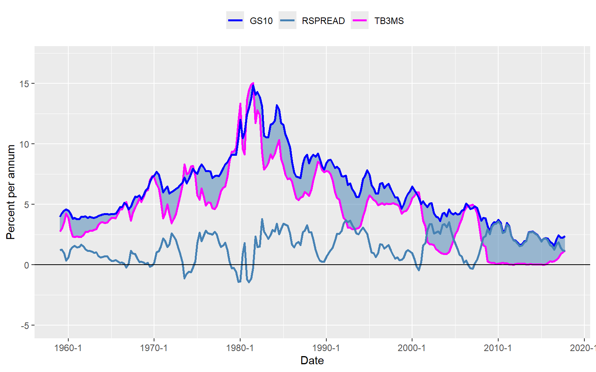
We can use the two-step Engle-Granger test to check whether these interest rates are cointegrated. In the first step, we estimate the cointegrating parameter \(\theta\) by the OLS estimator from the following regression: \[ \begin{align} \text{tb3ms}_t = \mu + \theta \text{gs10}_t + v_t. \end{align} \tag{26.14}\]
# Estimate cointegrating relationship: TB3MS ~ GS10
results <- lm(TB3MS ~ GS10, data = df)The estimation results are presented in Table Table 26.5. The estimated model is \[ \begin{align} \widehat{\text{tb3ms}}_{t}=-1.71+1.03\times\text{gs10}_t. \end{align} \]
Thus, the estimated cointegrating parameter is \(\hat{\theta}=1.03\).
# Estimation results from Step 1
# Display OLS results
modelsummary(results,
fmt = 3, stars = TRUE,
gof_omit = "AIC|BIC|Log"
)| (1) | |
|---|---|
| (Intercept) | -1.712*** |
| (0.184) | |
| GS10 | 1.028*** |
| (0.027) | |
| Num.Obs. | 236 |
| R2 | 0.860 |
| R2 Adj. | 0.859 |
| F | 1433.488 |
| RMSE | 1.17 |
| + p < 0.1, * p < 0.05, ** p < 0.01, *** p < 0.001 | |
In the second step, we use the EG-ADF test to test whether \(\hat{v}_t\) is stationary. The ADF test statistic given below is -4.52, which is less than the 5% critical value -3.41 given in Table 26.4. Thus, we can reject the null hypothesis of unit root. As a result, this two-step approach suggests that gs10 and tb3ms are cointegrated.
# Residuals from the cointegration regression
resid_ols <- residuals(results)
# ADF test on residuals (with intercept only, like regression='c')
adf_test <- ur.df(resid_ols, type = "drift", selectlags = "AIC")
# View summary
summary(adf_test)
###############################################
# Augmented Dickey-Fuller Test Unit Root Test #
###############################################
Test regression drift
Call:
lm(formula = z.diff ~ z.lag.1 + 1 + z.diff.lag)
Residuals:
Min 1Q Median 3Q Max
-2.2886 -0.2311 0.0484 0.2895 3.1167
Coefficients:
Estimate Std. Error t value Pr(>|t|)
(Intercept) 6.826e-05 3.435e-02 0.002 0.998416
z.lag.1 -1.355e-01 3.002e-02 -4.515 1.01e-05 ***
z.diff.lag 2.334e-01 6.399e-02 3.648 0.000327 ***
---
Signif. codes: 0 '***' 0.001 '**' 0.01 '*' 0.05 '.' 0.1 ' ' 1
Residual standard error: 0.5255 on 231 degrees of freedom
Multiple R-squared: 0.1063, Adjusted R-squared: 0.09857
F-statistic: 13.74 on 2 and 231 DF, p-value: 2.303e-06
Value of test-statistic is: -4.5154 10.1945
Critical values for test statistics:
1pct 5pct 10pct
tau2 -3.46 -2.88 -2.57
phi1 6.52 4.63 3.81Alternatively, we can resort to the dynamic OLS (DOLS) estimator to estimate the cointegrating coefficient. The estimation results are presented in Table 26.6. The estimated cointegrating parameter is \(\hat{\theta}\approx1\), which is close to the value obtained from the two-step approach.
# Using DOLS to estimate theta
m2 <- dynlm(TB3MS ~ GS10 + L(diff(GS10), k = -5:5))
m2Var <- NeweyWest(m2, lag = 5, prewhite = F)
m2Se <- sqrt(diag(m2Var))modelsummary(
models = list("Model" = m2),
stars = T,
vcov = m2Se
)| Model | |
|---|---|
| (Intercept) | -1.574*** |
| (0.309) | |
| GS10 | 1.009*** |
| (0.041) | |
| L(diff(GS10), k = -5 × 5)-5 | 0.235 |
| (0.172) | |
| L(diff(GS10), k = -5 × 5)-4 | 0.357* |
| (0.125) | |
| L(diff(GS10), k = -5 × 5)-3 | 0.447** |
| (0.110) | |
| L(diff(GS10), k = -5 × 5)-2 | 0.456** |
| (0.122) | |
| L(diff(GS10), k = -5 × 5)-1 | 0.437** |
| (0.134) | |
| L(diff(GS10), k = -5 × 5)0 | 0.402* |
| (0.179) | |
| L(diff(GS10), k = -5 × 5)1 | 0.413* |
| (0.129) | |
| L(diff(GS10), k = -5 × 5)2 | 0.188 |
| (0.151) | |
| L(diff(GS10), k = -5 × 5)3 | 0.436** |
| (0.144) | |
| L(diff(GS10), k = -5 × 5)4 | 0.382* |
| (0.130) | |
| L(diff(GS10), k = -5 × 5)5 | 0.650*** |
| (0.146) | |
| Num.Obs. | 225 |
| R2 | 0.903 |
| R2 Adj. | 0.897 |
| AIC | 657.7 |
| BIC | 705.5 |
| Log.Lik. | -314.833 |
| RMSE | 0.98 |
| Std.Errors | Custom |
| + p < 0.1, * p < 0.05, ** p < 0.01, *** p < 0.001 | |
Since both gs10 and tb3ms are cointegrated, we can estimate the VECM model for these two variables. Since these series are non-trended series, we consider the following VECM specification: \[
\begin{align}
\Delta\text{tb3ms}_t&=\delta_{11}\Delta\text{tb3ms}_{t-1}+\delta_{12}\Delta\text{tb3ms}_{t-2}+\delta_{13}\Delta\text{tb3ms}_{t-3}\\
&+\gamma_{11}\Delta\text{gs10}_{t-1}+\gamma_{12}\Delta\text{gs10}_{t-2}+\gamma_{13}\Delta\text{gs10}_{t-3}\\
&+\alpha_1(\text{tb3ms}_{t-1}-\theta\text{gs10}_{t-1}-\mu)+u_{1t},
\end{align}
\] \[
\begin{align}
\Delta\text{gs10}_t&=\delta_{21}\Delta\text{tb3ms}_{t-1}+\delta_{22}\Delta\text{tb3ms}_{t-2}+\delta_{23}\Delta\text{tb3ms}_{t-3}\\
&+\gamma_{21}\Delta\text{gs10}_{t-1}+\gamma_{22}\Delta\text{gs10}_{t-2}+\gamma_{23}\Delta\text{gs10}_{t-3}\\
&+\alpha_2(\text{tb3ms}_{t-1}-\theta\text{gs10}_{t-1}-\mu)+u_{2t}.
\end{align}
\]
We can use the VECM function from the vars package to estimate the VECM model for tb3ms and gs10 as shown below. The lag argument specifies the number of lags in the VECM, the r argument specifies the number of cointegrating relationships, and the include argument specifies whether to include an intercept or a linear time trend in the VECM. The beta argument allows us to specify the cointegrating vector. Since we have already estimated the cointegrating parameter \(\theta\) in the two-step approach, we can use this estimate to specify the cointegrating vector as \(\bs{\beta} = (1, -\hat{\theta})^{'}\). The estim argument specifies the estimation method, and the LRinclude argument specifies whether to include an intercept or a linear time trend in the error correction term.
model <- VECM(
data = tsMydata[, c("tb3ms", "gs10")],
lag = 3,
r = 1,
include = "none",
beta = NULL,
estim = "ML",
LRinclude = "const",
exogen = NULL
)summary(model)#############
###Model VECM
#############
Full sample size: 236 End sample size: 232
Number of variables: 2 Number of estimated slope parameters 14
AIC -682.5401 BIC -630.839 SSR 139.7794
Cointegrating vector (estimated by ML):
tb3ms gs10 const
r1 1 -1.007232 1.576377
ECT tb3ms -1 gs10 -1
Equation tb3ms -0.0945(0.0423)* 0.3727(0.0838)*** 0.0564(0.1207)
Equation gs10 0.0688(0.0289)* 0.0397(0.0574) 0.2099(0.0826)*
tb3ms -2 gs10 -2 tb3ms -3
Equation tb3ms -0.1999(0.0825)* -0.1886(0.1224) 0.2788(0.0827)***
Equation gs10 -0.0801(0.0565) -0.0895(0.0837) 0.0732(0.0566)
gs10 -3
Equation tb3ms 0.1048(0.1206)
Equation gs10 0.0566(0.0825) The first block of the estimation output presents the estimated cointegrating vector: \(\boldsymbol{\beta} = (\beta_1, \beta_2)^{'} = (1, -\theta)^{'}\). The estimated cointegrating parameter is \(\hat{\theta} = -\hat{\beta}_2 = 1.007\), which is close to the value obtained from the two-step approach.
The estimated coefficients for the lag terms appear in the second block of the estimation output. For \(\Delta\text{tb3ms}\), only its own lag terms are statistically significant at the 5% level. For \(\Delta\text{gs10}\), only the first lag of its own term is statistically significant at the 5% level.
The estimated coefficients for the error correction terms are provided under the ECT column. These coefficients are \(\hat{\alpha}_1 = -0.0945\) and \(\hat{\alpha}_2 = 0.0688\), both of which are statistically significant at the 5% level. The estimate \(\hat{\alpha}_1 = -0.0945\) suggests that the error correction term \((\text{tb3ms}_{t-1} - \theta\times \text{gs10}_{t-1} - \mu)\) negatively affects \(\Delta\text{tb3ms}_t\), while \(\hat{\alpha}_2 = 0.0688\) indicates a positive effect on \(\Delta\text{gs10}_t\). These estimates imply that if the short-term interest rate exceeds the long-term interest rate by more than 1.6, the short-term interest rate will decrease while the long-term interest rate will increase, and vice versa.
We can use the ca.jo function from the urca package to perform the Johansen cointegration test. The ca.jo function requires the data to be in a ts object. The type argument specifies the type of test to be performed: trace for the trace statistic and eigen for the maximum eigenvalue statistic. The K argument specifies the number of lags in the VAR model, and the ecdet argument specifies the deterministic component to be included in the vector error correction term.
# Johansen test for cointegration: trace statistic
trace_stat <- ca.jo(tsMydata[, c("tb3ms", "gs10")],
type = "trace",
ecdet = "const",
K = 3,
spec = "transitory"
)# Trace statistic and critical values
summary(trace_stat)
######################
# Johansen-Procedure #
######################
Test type: trace statistic , without linear trend and constant in cointegration
Eigenvalues (lambda):
[1] 9.424203e-02 9.556330e-03 8.765943e-18
Values of teststatistic and critical values of test:
test 10pct 5pct 1pct
r <= 1 | 2.24 7.52 9.24 12.97
r = 0 | 25.30 17.85 19.96 24.60
Eigenvectors, normalised to first column:
(These are the cointegration relations)
tb3ms.l1 gs10.l1 constant
tb3ms.l1 1.000000 1.000000 1.000000
gs10.l1 -1.042671 8.075155 -3.891947
constant 1.769976 -50.520741 68.811930
Weights W:
(This is the loading matrix)
tb3ms.l1 gs10.l1 constant
tb3ms.d -0.02828046 -0.002548758 -1.766993e-18
gs10.d 0.08968674 -0.001255779 -2.534307e-19The trace statistics for \(H_0:\text{rank}(\bs{\Pi})=0\) and \(H_0:\text{rank}(\bs{\Pi})=1\) are 25.30 and 2.24, respectively. The corresponding critical values at the 5% significance level are 19.96 and 9.24. Thus, we can reject \(H_0:\text{rank}(\bs{\Pi})=0\) but fail to reject \(H_0:\text{rank}(\bs{\Pi})=1\). As a result, we conclude that there is one cointegrating relationship according to the trace statistic.
The maximum eigenvalue statistics for \(H_0:\text{rank}(\bs{\Pi})=0\) and \(H_0:\text{rank}(\bs{\Pi})=1\) are 23.06 and 2.24, respectively. The corresponding critical values at the 5% significance level are 15.67 and 9.24. Again, we can reject \(H_0:\text{rank}(\bs{\Pi})=0\) but fail to reject \(H_0:\text{rank}(\bs{\Pi})=1\). As a result, the maximum eigenvalue statistic also suggests one cointegrating relationship.
# Johansen test for cointegration: maximum eigenvalue statistic
trace_eigen <- ca.jo(tsMydata[, c("tb3ms", "gs10")],
type = "eigen",
ecdet = "const",
K = 3,
spec = "transitory"
)# Maximum eigenvalue statistic and critical values
summary(trace_eigen)
######################
# Johansen-Procedure #
######################
Test type: maximal eigenvalue statistic (lambda max) , without linear trend and constant in cointegration
Eigenvalues (lambda):
[1] 9.424203e-02 9.556330e-03 8.765943e-18
Values of teststatistic and critical values of test:
test 10pct 5pct 1pct
r <= 1 | 2.24 7.52 9.24 12.97
r = 0 | 23.06 13.75 15.67 20.20
Eigenvectors, normalised to first column:
(These are the cointegration relations)
tb3ms.l1 gs10.l1 constant
tb3ms.l1 1.000000 1.000000 1.000000
gs10.l1 -1.042671 8.075155 -3.891947
constant 1.769976 -50.520741 68.811930
Weights W:
(This is the loading matrix)
tb3ms.l1 gs10.l1 constant
tb3ms.d -0.02828046 -0.002548758 -1.766993e-18
gs10.d 0.08968674 -0.001255779 -2.534307e-1926.6 Volatility clustering and autoregressive conditional heteroskedasticity
The conditional variance of financial asset returns is called volatility. The volatility increases during financial crises and decreases during periods of economic stability.
Definition 26.4 (Volatility clustering) A series exhibits volatility clustering if periods of high volatility are followed by high volatility, and periods of low volatility are followed by low volatility.
As an example, we consider the daily Wilshire 5000 index, a broad stock market index that includes all actively traded U.S. stocks. Figure 26.6 displays the time series plots of the index value, returns, squared returns, and absolute returns. The returns are calculated as the percentage change in the index value; squared returns are the square of the returns, and absolute returns are the absolute value of the returns. Although the index value shows an upward trend, there are periods where the value decreases. The returns exhibit volatility clustering, with periods of high volatility followed by high volatility and periods of low volatility followed by low volatility. This pattern is also observed in the squared and absolute returns.
# Load the data
df <- read.csv("data/WILL500IND.csv")
# Convert the date column to Date format
df$date <- as.Date(df$date)
# Compute returns
df$return <- 100 * (df$value - dplyr::lag(df$value)) / dplyr::lag(df$value)
# Compute squared returns
df$squared_return <- df$return^2
# Compute absolute returns
df$abs_return <- abs(df$return)
# Set the date as the index (convert to a time-series object if desired)
df <- df[order(df$date), ]
rownames(df) <- df$date# Plot 1: Index value
p1 <- ggplot(df, aes(x = date, y = value)) +
geom_line(color = "steelblue") +
labs(
title = "Wilshire 5000 Index Value",
x = "Date",
y = "Value"
)
# Plot 2: Returns
p2 <- ggplot(df, aes(x = date, y = return)) +
geom_line(color = "steelblue") +
labs(
title = "Returns",
x = "Date",
y = "Return"
)
# Plot 3: Squared returns
p3 <- ggplot(df, aes(x = date, y = squared_return)) +
geom_line(color = "steelblue") +
labs(
title = "Squared Returns",
x = "Date",
y = "Squared Return"
)
# Plot 4: Absolute returns
p4 <- ggplot(df, aes(x = date, y = abs_return)) +
geom_line(color = "steelblue") +
labs(
title = "Absolute Returns",
x = "Date",
y = "Absolute Return"
)
# Arrange plots in a single column
grid.arrange(p1, p2, p3, p4, ncol = 1)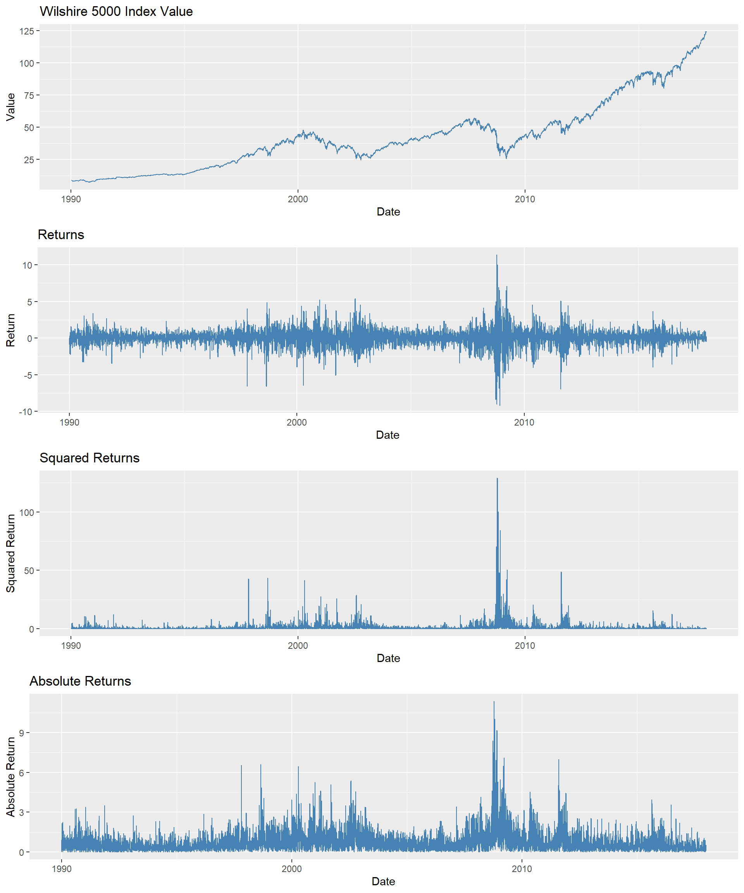
The volatility clustering observed in the returns leads to autocorrelation in the squared returns. The correlograms of the returns and squared returns are shown in Figure 26.7. While the autocorrelation of the returns is relatively small at all lags, the autocorrelation of the squared returns is significant at all lags and decays slowly.
# Autocorrelation of returns, absolute value of returns, and squared returns
ggAcf(df$return[-1], lag.max = 30) +
labs(title = "ACF of returns")
ggAcf(df$abs_return[-1], lag.max = 30) +
labs(title = "ACF of absolute value of returns")
ggAcf(df$squared_return[-1], lag.max = 30) +
labs(title = "ACF of squared returns")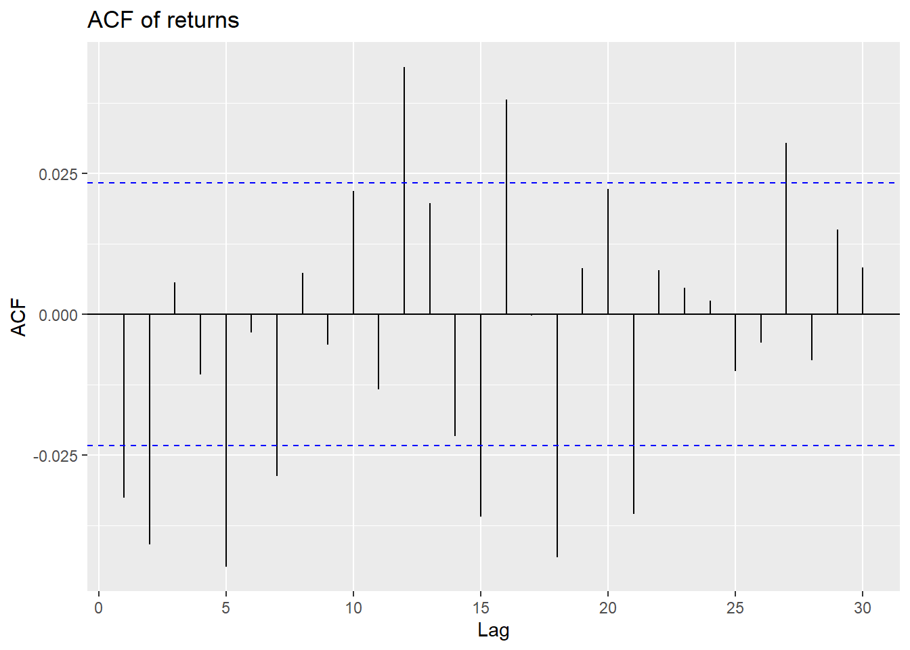
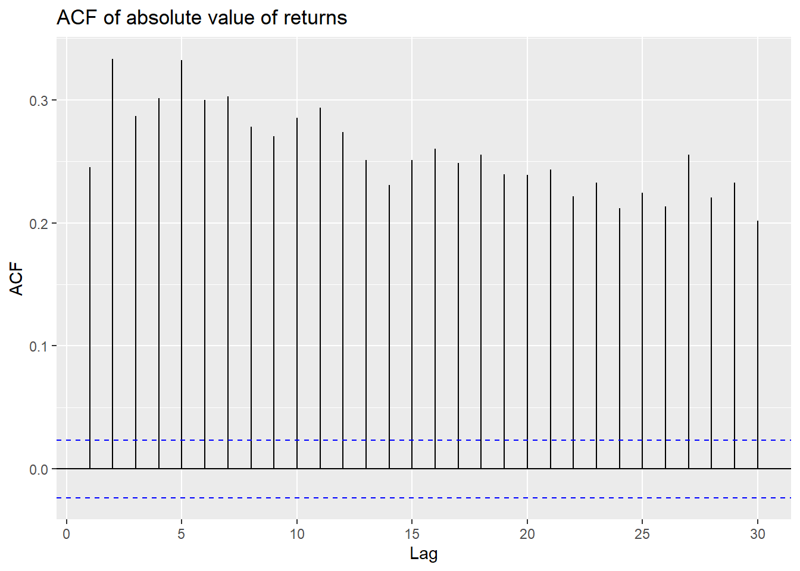
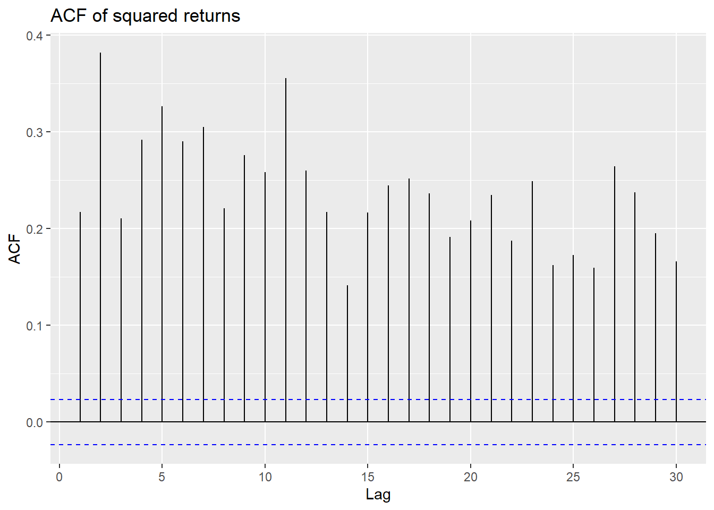
In Figure 26.7, we observe that autocorrelations of returns are rather weak, making it difficult to predict future outcomes using, for example, an AR model. However, we observe strong and persistent autocorrelation in the absolute value of returns and the squared returns.
In this section, we review two methods for estimating volatility: (i) the realized volatility approach and (ii) the model-based approach. Estimating volatility is important for several reasons. First, the volatility of an asset serves as a measure of its risk. A risk-averse investor will require a higher return for holding an asset with higher volatility. Second, volatility is used in the pricing of financial derivatives. For example, the Black-Scholes option pricing model uses the volatility of the underlying asset as an input. Third, volatility can be used to improve the accuracy of forecast intervals.
26.6.1 The realized volatility approach
The realized volatility approach uses high-frequency data to estimate the volatility of an asset. Since the mean return of the high-frequency data is close to zero, volatility is typically estimated not by the sample variance, but by the sample root mean square of the returns. The \(h\)-period realized volatility estimate of a variable \(Y_t\) is the sample root mean square of \(Y\) computed over \(h\) consecutive periods: \[ \begin{align} \text{RV}^h_t=\sqrt{\frac{1}{h}\sum_{s=t-h+1}^tY^2_s}. \end{align} \]
For the Wilshire 5000 index returns, we set \(h=20\) and compute the 20-day realized volatility. In the following, we compute the realized volatility using the return column in the df DataFrame.
h <- 20
T <- nrow(df)
df$RV <- 0
for (t in (h + 1):T) {
df$RV[t] <- sqrt(mean(df$return[(t - h + 1):t]^2, na.rm = TRUE))
}The time-series plot of the 20-day realized volatility estimates is shown in Figure 26.8. In Figure 26.9, we plot the returns along with the realized volatility bands (\(\pm\text{RV}\)). The figure shows that when returns are large, realized volatility is also high, and vice versa, suggesting that realized volatility effectively captures the volatility clustering observed in the returns. The width of the band can be used to identify periods of high volatility. For example, the realized volatility bands are wide during the 2008 financial crisis, indicating high volatility in the returns.
# Time-series plot of the 20-day realized volatility estimates
ggplot(df, aes(x = date, y = RV)) +
geom_line(color = "black", linewidth = 0.7) +
geom_hline(yintercept = 0, linetype = "dashed", color = "black", linewidth = 0.6) +
labs(
x = "Date",
y = "Volatility"
)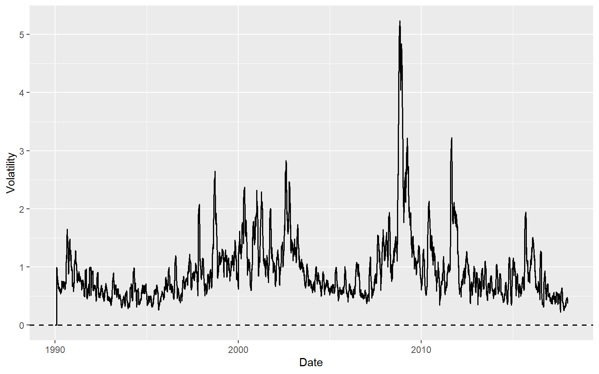
# Time-series plot of returns along with the realized volatility bands
ggplot(df, aes(x = date)) +
geom_line(aes(y = return, color = "Return"), linewidth = 0.6) +
geom_line(aes(y = RV, color = "Realized Volatility"), linewidth = 0.7) +
geom_line(aes(y = -RV), color = "black", linewidth = 0.7) +
geom_hline(yintercept = 0, linetype = "dashed", color = "black") +
labs(
x = "Date",
y = "Percent",
color = ""
) +
scale_color_manual(values = c(
"Return" = "steelblue",
"Realized Volatility" = "black"
)) +
theme(legend.position = "top")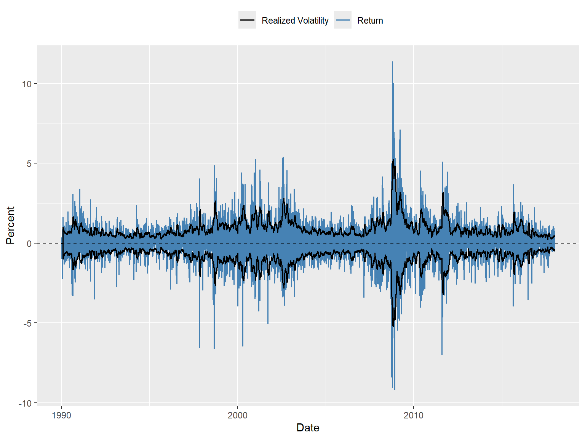
26.6.2 The model-based approach
The model-based approach is used when the data are not available at high frequency. The most popular model for estimating volatility is the autoregressive conditional heteroskedasticity (ARCH) model proposed by Engle (1982) and its extension, the generalized autoregressive conditional heteroskedasticity (GARCH) model proposed by Bollerslev (1986). In the ARCH model, we assume that the conditional variance of the returns is a function of the past squared returns. The ARCH(\(p\)) model is given by \[ \begin{align} &Y_t=\beta_0+\beta_1Y_{t-1}+\gamma_1X_{t-1}+u_t,\\ &\sigma^2_t=\omega+\alpha_1u^2_{t-1}+\alpha_2u^2_{t-2}+\ldots+\alpha_pu^2_{t-p}, \end{align} \tag{26.15}\] where \(Y_t\) is the return, \(X_t\) is a regressor, \(u_t\) is the error term, which is independent over \(t\) with mean zero and variance \(\sigma^2_t\). The parameters \(\beta_0,\beta_1,\gamma_1,\omega, \alpha_1,\ldots,\alpha_p\) are unknown coefficients. The first equation is the mean equation, where we assume an ADL(1,1) model for the returns. The second equation is the variance equation, where the conditional variance \(\sigma^2_t\) is a function of the past squared error terms.
The GARCH(p,q) model extends the ARCH model by including past conditional variances in the variance equation: \[ \begin{align} \sigma^2_t=\omega+\sum_{i=1}^p\alpha_iu^2_{t-i}+\sum_{j=1}^q\beta_j\sigma^2_{t-j}, \end{align} \tag{26.16}\] where \(\omega,\alpha_1,\ldots,\alpha_p,\beta_1,\ldots,\beta_q\) are unknown parameters.
For both models, the mean equation can alternatively be specified as \[ \begin{align} &Y_t=\beta_0+\beta_1Y_{t-1}+\gamma_1X_{t-1}+\sigma_tv_t, \end{align} \tag{26.17}\] where \(v_t\) is i.i.d over \(t\) with mean zero and variance one. The error term \(u_t\) in Equation 26.15 is then given by \(u_t=\sigma_tv_t\).
Consider the GARCH(1,1) model and let \(\mathcal{F}_{t-1}\) be the information set available at time \(t-1\). Then, the conditional mean and variance of \(Y_t\) are \[ \begin{align} \E(Y_t|\mathcal{F}_{t-1})&=\E(\beta_0+\beta_1Y_{t-1}+\gamma_1X_{t-1}+\sigma_tv_t|\mathcal{F}_{t-1})\\ &=\beta_0+\beta_1Y_{t-1}+\gamma_1X_{t-1}+\sigma_t\E\left(v_t|\mathcal{F}_{t-1}\right)\\ &=\beta_0+\beta_1Y_{t-1}+\gamma_1X_{t-1}, \end{align} \tag{26.18}\] and \[ \begin{align} \text{Var}(Y_t|\mathcal{F}_{t-1})&=\E((Y_t-(\beta_0+\beta_1Y_{t-1}+\gamma_1X_{t-1}))^2|\mathcal{F}_{t-1})\\ &=\E(\sigma^2_tv^2_t|\mathcal{F}_{t-1})\\ &=\sigma^2_t\E\left(v^2_t|\mathcal{F}_{t-1}\right)\\ &=\sigma^2_t. \end{align} \tag{26.19}\]
Thus, the conditional standard deviation is \(\sqrt{\text{Var}(Y_t|\mathcal{F}_{t-1})}=\sigma_t\).
Definition 26.5 (Volatility) In ARCH and GARCH models, the conditional standard deviation \(\sigma_t\) is called volatility.
26.6.3 Estimation of ARCH and GARCH models
The ARCH and GARCH models can be estimated using the maximum likelihood method. Under the assumption that \(v_t\sim N(0,1)\), we have \(Y_t|\mathcal{F}_{t-1}\sim N(\beta_0+\beta_1Y_{t-1}+\gamma_1X_{t-1},\sigma^2_t)\). Thus, we can express the likelihood function of GARCH\((\)p,q\()\) as \[ \begin{align} L(\theta)=\prod_{t=1}^T\frac{1}{\sqrt{2\pi\sigma^2_t}}\exp\left(-\frac{1}{2\sigma^2_t}(Y_t-\beta_0-\beta_1Y_{t-1}-\gamma_1X_{t-1})^2\right), \end{align} \tag{26.20}\] where \(\theta=(\beta_0,\beta_1,\gamma_1,\omega,\alpha_1,\ldots,\alpha_p,\phi_1,\ldots,\phi_q)^{'}\) is the vector of unknown parameters. The log-likelihood function is then given by \[ \begin{align} \ln L(\theta)=-\frac{T}{2}\ln(2\pi)-\frac{1}{2}\sum_{t=1}^T\ln(\sigma^2_t)-\frac{1}{2}\sum_{t=1}^T\frac{1}{\sigma^2_t}(Y_t-\beta_0-\beta_1Y_{t-1}-\gamma_1X_{t-1})^2. \end{align} \tag{26.21}\]
Then, the maximum likelihood estimator (MLE) is defined by \[ \begin{align} \hat{\theta}=\text{argmax}_{\theta} L(\theta). \end{align} \tag{26.22}\]
Under some standard assumptions, the MLE is a consistent estimator and has an asymptotic normal distribution. For further details on the estimation of ARCH and GARCH models, see Hamilton (1994) and Francq and Zakoian (2019).
26.6.4 Volatility forecasting
We assume the following GARCH(1,1) model for the returns: \[ \begin{align} &Y_t=\beta_0+\sigma_tv_t,\\ &\sigma^2_t=\omega+\alpha_1u^2_{t-1}+\phi_1\sigma^2_{t-1}, \end{align} \] for \(t=1,\ldots,T\). Then, from \(Y_{T+1}=\beta_0+u_{T+1}\), we obtain one-step ahead forecast as \[ \begin{align} Y_{T+1|T}=\E(Y_{T+1}|\mathcal{F}_T)=\E(\beta_0+u_{T+1}|\mathcal{F}_T)=\beta_0. \end{align} \] In general, the \(h\)-step forecast is \(Y_{T+h|T}=\beta_0\). Let \(e_h\) be the \(h\)-step ahead forecast error. Then, we have \[ \begin{align} e_h=Y_{T+h}-Y_{T+h|T}=\beta_0+u_{T+h}-\beta_0=u_{T+h}. \end{align} \] The conditional variance of \(e_h\) is \[ \begin{align} \var(e_h|\mathcal{F}_T)&=\var(u_{T+h}|\mathcal{F}_T)=\E(u^2_{T+h}|\mathcal{F}_T)\\ &=\E(\sigma^2_{T+h}v^2_{T+h}|\mathcal{F}_T)=\E(\sigma^2_{T+h}|\mathcal{F}_T). \end{align} \]
Thus, to construct confidence bands for the \(h\)-step ahead forecast, the \(h\)-step ahead volatility forecast \(\sigma^2_{T+h|T}= \E(\sigma^2_{T+h}|\mathcal{F}_T)\) is needed. The one-step-ahead forecast of volatility is \[ \begin{align} \sigma^2_{T+1|T}= \E(\sigma^2_{T+1}|\mathcal{F}_T)=\omega+\alpha_1u^2_{T}+\phi_1\sigma^2_{T}. \end{align} \] Since \(u^2_{T}\) and \(\sigma^2_T\) are known at time \(T\), \(\sigma^2_{T+1|T}\) will be available once we have the estimates of \(\omega\), \(\alpha_1\) and \(\phi_1\). Now, consider \(h\)-step ahead forecast \(\sigma^2_{T+h|T}\): \[ \begin{align*} \sigma^2_{T+h|T}&=\E\left(\omega+\alpha_1u^2_{T+h-1}+\phi_1\sigma^2_{T+h-1}|\mathcal{F}_T\right)\\ &=\omega+\alpha_1\E\left(u^2_{T+h-1}|\mathcal{F}_T\right) +\phi_1\E\left(\sigma^2_{T+h-1}|\mathcal{F}_T\right)\nonumber\\ &=\omega+(\alpha_1+\phi_1)\E\left(\sigma^2_{T+h-1}|\mathcal{F}_T\right)\\ &=\omega+(\alpha_1+\phi_1)\sigma^2_{T+h-1|T}. \end{align*} \] This result suggests that the \(h\)-step ahead forecast of volatility is a first-order difference equation. Given \(\sigma^2_{T+1|T}\), we can recursively compute \(\sigma^2_{T+2|T}, \sigma^2_{T+3|T},\ldots,\sigma^2_{T+h|T}\). It can be shown that as \(h\to\infty\), we have \[ \begin{align} \sigma^2_{T+h|T}\to\frac{\omega}{1-\alpha_1-\phi_1}. \end{align} \]
Finally, the \(95\%\) forecast interval for the \(h\)-step ahead forecast \(Y_{T+h|T}=\beta_0\) can be constructed as \[ \begin{align} \hat{\beta}_0\pm1.96\times\widehat{\var}(e_h|\mathcal{F}_T)= \hat{\beta}_0\pm1.96\times\hat{\sigma}_{T+h|T}. \end{align} \]
26.6.5 Application
The correlogram of the Wilshire 5000 index returns does not exhibit autocorrelation. Therefore, we consider the following GARCH(1,1) model for the Wilshire 5000 index returns: \[ \begin{align} &Y_t=\beta_0+\sigma_tv_t,\\ &\sigma^2_t=\omega+\alpha_1u^2_{t-1}+\phi_1\sigma^2_{t-1}. \end{align} \]
In R, we can use either the fGarch package or the rugarch package to estimate the GARCH model. The fGarch package is an older package that provides functions for estimating ARCH and GARCH models, while the rugarch package is a more recent package that offers a wider range of GARCH models and more advanced features.
In the fGarch package, we use the garchFit function to estimate the GARCH model. The formula argument specifies the model to be estimated. The cond.dist argument specifies the distribution of the error terms. The available options for cond.dist include "norm" for normal distribution, "std" for Student’s t-distribution, and "ged" for generalized error distribution.
# estimate GARCH(1,1) model of daily percentage changes
garch_model <- garchFit(
formula = ~ garch(1, 1),
data = df$return[-1],
cond.dist = "norm",
trace = F
)The garchFit function returns an S4 object of class fGARCH which has 10 slots. These slots can be returned by using garch_model@SlotName. The important slots are
garch_model@datais a list holding the empirical dataset,garch_model@fitis a list with all information and parameters from the estimation,garch_model@residualsis vector of residuals (\(\hat{u}_t\)),garch_model@fitted.valuesis vector of fitted values (\(\hat{Y}_t\)),garch_model@@sigma.tis the vector of estimated volatility (\(\hat{\sigma}_t\)),
The estimation results can be returned by summary(garch_model). The estimated model can be expressed as
\[ \begin{align} &\widehat{Return}_t=0.064,\\ &\hat{\sigma}^2_t=0.013+0.088u^2_{t-1}+0.900\sigma^2_{t-1} \end{align} \]
All estimated coefficients are statistically significant.
# Print estimation results
summary(garch_model)
Title:
GARCH Modelling
Call:
garchFit(formula = ~garch(1, 1), data = df$return[-1], cond.dist = "norm",
trace = F)
Mean and Variance Equation:
data ~ garch(1, 1)
<environment: 0x000001c9f8876a10>
[data = df$return[-1]]
Conditional Distribution:
norm
Coefficient(s):
mu omega alpha1 beta1
0.066901 0.012932 0.087528 0.900589
Std. Errors:
based on Hessian
Error Analysis:
Estimate Std. Error t value Pr(>|t|)
mu 0.066901 0.008997 7.436 1.04e-13 ***
omega 0.012932 0.002033 6.362 1.99e-10 ***
alpha1 0.087528 0.007303 11.985 < 2e-16 ***
beta1 0.900589 0.008160 110.372 < 2e-16 ***
---
Signif. codes: 0 '***' 0.001 '**' 0.01 '*' 0.05 '.' 0.1 ' ' 1
Log Likelihood:
-9141.621 normalized: -1.295765
Description:
Mon Mar 16 13:00:08 2026 by user: ITU
Standardised Residuals Tests:
Statistic p-Value
Jarque-Bera Test R Chi^2 1212.76293 0.0000000000
Shapiro-Wilk Test R W NA NA
Ljung-Box Test R Q(10) 22.89531 0.0111396790
Ljung-Box Test R Q(15) 38.67115 0.0007174656
Ljung-Box Test R Q(20) 41.98481 0.0027782144
Ljung-Box Test R^2 Q(10) 17.60828 0.0619420093
Ljung-Box Test R^2 Q(15) 24.08864 0.0636034905
Ljung-Box Test R^2 Q(20) 27.45322 0.1229878453
LM Arch Test R TR^2 19.47251 0.0777456120
Information Criterion Statistics:
AIC BIC SIC HQIC
2.592664 2.596554 2.592663 2.594004 Next, we use the rugarch package to estimate the GARCH(1,1) model. The ugarchspec function is used to specify the GARCH model. The variance.model argument specifies the type of GARCH model and the order of the GARCH terms. The mean.model argument specifies the mean equation, including the ARMA order and whether to include a mean term. The distribution.model argument specifies the distribution of the error terms. The ugarchfit function is then used to estimate the model based on the specified model and the data. The estimation results can be printed using the show function.
# Remove missing values
df <- na.omit(df)
# Specify the GARCH(1,1) model
spec <- ugarchspec(
variance.model = list(model = "sGARCH", garchOrder = c(1, 1)),
mean.model = list(armaOrder = c(0, 0), include.mean = TRUE),
distribution.model = "norm"
)
# Estimate the model
garch_fit <- ugarchfit(
spec = spec,
data = df$return
)
# Print estimation results
show(garch_fit)
*---------------------------------*
* GARCH Model Fit *
*---------------------------------*
Conditional Variance Dynamics
-----------------------------------
GARCH Model : sGARCH(1,1)
Mean Model : ARFIMA(0,0,0)
Distribution : norm
Optimal Parameters
------------------------------------
Estimate Std. Error t value Pr(>|t|)
mu 0.066902 0.008999 7.4347 0
omega 0.012932 0.002087 6.1971 0
alpha1 0.087531 0.007429 11.7817 0
beta1 0.900588 0.008354 107.8050 0
Robust Standard Errors:
Estimate Std. Error t value Pr(>|t|)
mu 0.066902 0.008448 7.9189 0.000000
omega 0.012932 0.003407 3.7958 0.000147
alpha1 0.087531 0.013582 6.4447 0.000000
beta1 0.900588 0.014605 61.6633 0.000000
LogLikelihood : -9141.621
Information Criteria
------------------------------------
Akaike 2.5927
Bayes 2.5966
Shibata 2.5927
Hannan-Quinn 2.5940
Weighted Ljung-Box Test on Standardized Residuals
------------------------------------
statistic p-value
Lag[1] 2.243 0.13418
Lag[2*(p+q)+(p+q)-1][2] 2.655 0.17409
Lag[4*(p+q)+(p+q)-1][5] 7.149 0.04772
d.o.f=0
H0 : No serial correlation
Weighted Ljung-Box Test on Standardized Squared Residuals
------------------------------------
statistic p-value
Lag[1] 1.515 0.218393
Lag[2*(p+q)+(p+q)-1][5] 11.033 0.004981
Lag[4*(p+q)+(p+q)-1][9] 12.580 0.013358
d.o.f=2
Weighted ARCH LM Tests
------------------------------------
Statistic Shape Scale P-Value
ARCH Lag[3] 0.03524 0.500 2.000 0.8511
ARCH Lag[5] 0.37897 1.440 1.667 0.9186
ARCH Lag[7] 0.81923 2.315 1.543 0.9411
Nyblom stability test
------------------------------------
Joint Statistic: 1.0001
Individual Statistics:
mu 0.04639
omega 0.20422
alpha1 0.31096
beta1 0.29527
Asymptotic Critical Values (10% 5% 1%)
Joint Statistic: 1.07 1.24 1.6
Individual Statistic: 0.35 0.47 0.75
Sign Bias Test
------------------------------------
t-value prob sig
Sign Bias 3.6365 2.783e-04 ***
Negative Sign Bias 0.2194 8.264e-01
Positive Sign Bias 2.8061 5.028e-03 ***
Joint Effect 50.5954 5.966e-11 ***
Adjusted Pearson Goodness-of-Fit Test:
------------------------------------
group statistic p-value(g-1)
1 20 210.6 2.588e-34
2 30 243.2 1.052e-35
3 40 299.8 5.942e-42
4 50 335.8 2.170e-44
Elapsed time : 0.2817121 Below, we state the estimated model. All estimated coefficients are statistically significant at the 5% level.
\[
\begin{align}
&\widehat{Y}_t=0.067,\\
&\hat{\sigma}^2_t=0.013+0.088u^2_{t-1}+0.900\sigma^2_{t-1}.
\end{align}
\]
Figure 26.10 shows the time-series plot of the GARCH volatility estimates. In Figure 26.11, we plot returns together with the estimated volatility bands (\(\pm \hat{\sigma}_t\)). The figure shows that when returns are large, the estimated volatility is also high, and vice versa, suggesting that the GARCH model effectively captures the volatility clustering observed in the returns. The estimated volatility bands \((\pm \hat{\sigma}_t)\) track the observed heteroskedasticity in the series quite well. This is useful for quantifying the time-varying volatility and the resulting risk for investors holding stocks summarized by the index:
During the 1990s, the estimated band is relatively narrow, indicating lower levels of risk for investors holding a portfolio of stocks in the Wilshire 5000 index.
The band becomes relatively wider during the 2000s, particularly around 2008, indicating greater daily stock price volatility. This suggests that the risk for investors holding stocks in the Wilshire 5000 index was higher during this period, especially during the 2008 financial crisis.
# Extract conditional volatility from the fitted GARCH model
volatility <- sigma(garch_fit) # sigma() returns the conditional volatility
# Create a data frame for plotting
plot_df <- data.frame(
date = df$date,
volatility = volatility
)
# Plot
ggplot(plot_df, aes(x = date, y = volatility)) +
geom_line(color = "steelblue", linewidth = 0.7) +
geom_hline(yintercept = 0, linetype = "dashed") +
labs(
x = "Date",
y = "Volatility"
)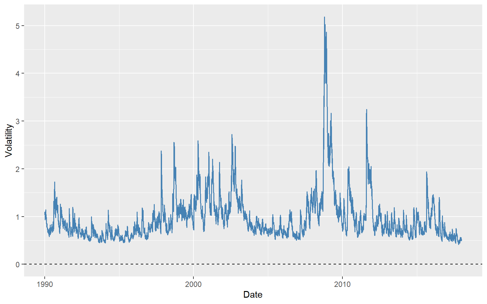
# Extract conditional volatility from the fitted GARCH model
volatility <- sigma(garch_fit)
# Create a data frame for plotting
plot_df <- data.frame(
date = df$date,
return = df$return,
volatility = volatility
)
# Plot returns and ± GARCH volatility bands
ggplot(plot_df, aes(x = date)) +
# Returns
geom_line(aes(y = return, color = "Return"), linewidth = 0.7) +
# GARCH volatility bands
geom_line(aes(y = volatility, color = "GARCH Volatility"), linewidth = 0.7) +
geom_line(aes(y = -volatility), color = "black", linewidth = 0.7, show.legend = FALSE) +
# Horizontal line at zero
geom_hline(yintercept = 0, linetype = "dashed", color = "black") +
# Labels and legend
labs(
x = "Date",
y = "Percent",
color = ""
) +
scale_color_manual(values = c(
"Return" = "steelblue",
"GARCH Volatility" = "black"
)) +
theme(legend.position = "top")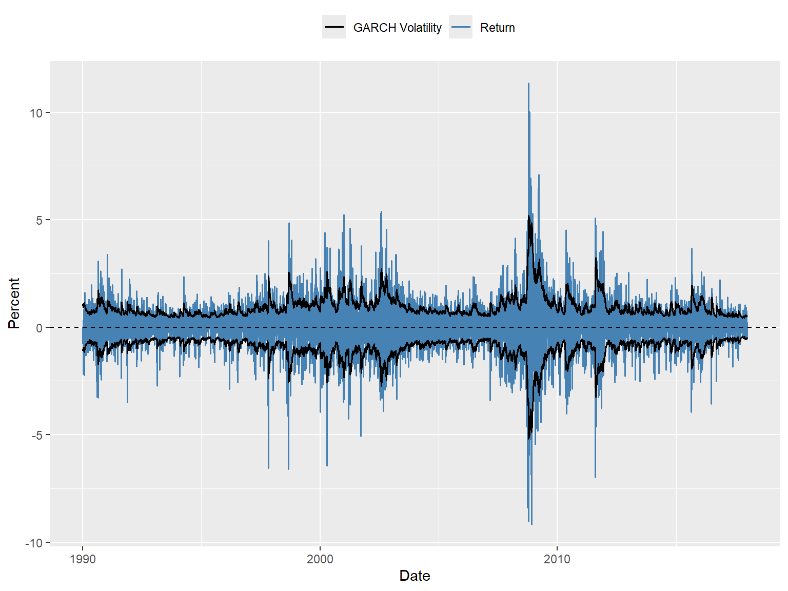
Next, we forecast the volatility for the next five periods using the ugarchforecast function from the rugarch package. The option n.ahead = 5 specifies that we want to forecast the next five periods. The option method='analytic' indicates that we want to use the analytic method to forecast the volatility. The results are presented in Table 26.7, which shows the forecasted mean and variance for the next five periods. The forecasted mean is constant at 0.067, while the forecasted variance increases over time.
# Forecast 5 steps ahead
garch_forecast <- ugarchforecast(
fitORspec = garch_fit, # the fitted GARCH model
n.ahead = 5,
method = "analytic"
)
# Forecasted conditional mean
f_mean <- fitted(garch_forecast)
# Forecasted conditional variance
f_var <- sigma(garch_forecast)^2
# Combine in a data frame for display
forecast_df <- data.frame(
Forecasted_Mean = f_mean,
Forecasted_Variance = f_var
)# Print the forecasted mean and variance
kable(forecast_df, digits =3, col.names = c("Forecasted Mean", "Forecasted Variance")) | Forecasted Mean | Forecasted Variance | |
|---|---|---|
| T+1 | 0.067 | 0.256 |
| T+2 | 0.067 | 0.266 |
| T+3 | 0.067 | 0.276 |
| T+4 | 0.067 | 0.286 |
| T+5 | 0.067 | 0.295 |
The forecasted variance for the next five periods can be used to construct the forecast interval for the returns based on \(\hat{\beta}_0\pm1.96\times\sigma_{T+h|T}\).
We assume that \(v_t\sim N(0,1)\), which is a common assumption in GARCH models. However, this assumption might not hold in practice. We can use the standardized residuals to test the normality assumption. Among some other tests, we can resort to the Jarque-Bera normality test to test the normality of the standardized error terms. We consider the following null and alternative hypotheses: \[ \begin{align} &H_0: v_t\sim N(0,1)\\ &H_1: v_t \text{ is not normally distributed}. \end{align} \]
The test statistic has a chi-squared distribution with two degrees of freedom. The following, we use the jarque.bera.test function from the tseries package to perform the Jarque-Bera test on the standardized residuals from the fitted GARCH model. The reported p-value is very small, which leads us to reject the null hypothesis of normality.
# Extract standardized residuals from the fitted GARCH model
std_resid <- residuals(garch_fit, standardize = TRUE)
# Perform Jarque-Bera test
jb_results <- jarque.bera.test(std_resid)
# Print results
jb_results
Jarque Bera Test
data: std_resid
X-squared = 1212.8, df = 2, p-value < 2.2e-16Since the assumption that \(v_t \sim N(0,1)\) is rejected, we can consider alternative distributions for the error terms in the GARCH model. One common choice is the Student’s t-distribution, which allows for heavier tails than the normal distribution. This can be particularly useful for financial data, which often exhibit excess kurtosis (fat tails) compared to the normal distribution. In the following, the option distribution.model = "std" specifies this distribution. The degrees of freedom parameter shape is estimated along with the other parameters.
# Specify GARCH(1,1) with Student's t-distribution
spec_t <- ugarchspec(
variance.model = list(model = "sGARCH", garchOrder = c(1, 1)),
mean.model = list(armaOrder = c(0, 0), include.mean = TRUE),
distribution.model = "std" # Student's t-distribution
)
# Estimate the model
garch_fit_t <- ugarchfit(
spec = spec_t,
data = df$return
)
# Print estimation results
show(garch_fit_t)
*---------------------------------*
* GARCH Model Fit *
*---------------------------------*
Conditional Variance Dynamics
-----------------------------------
GARCH Model : sGARCH(1,1)
Mean Model : ARFIMA(0,0,0)
Distribution : std
Optimal Parameters
------------------------------------
Estimate Std. Error t value Pr(>|t|)
mu 0.079796 0.008357 9.5490 0.000000
omega 0.006625 0.001927 3.4374 0.000587
alpha1 0.079648 0.009586 8.3089 0.000000
beta1 0.917551 0.009909 92.5937 0.000000
shape 6.460457 0.502777 12.8495 0.000000
Robust Standard Errors:
Estimate Std. Error t value Pr(>|t|)
mu 0.079796 0.007348 10.8599 0.00000
omega 0.006625 0.002676 2.4762 0.01328
alpha1 0.079648 0.015540 5.1254 0.00000
beta1 0.917551 0.016196 56.6522 0.00000
shape 6.460457 0.519618 12.4331 0.00000
LogLikelihood : -8988.941
Information Criteria
------------------------------------
Akaike 2.5497
Bayes 2.5545
Shibata 2.5497
Hannan-Quinn 2.5513
Weighted Ljung-Box Test on Standardized Residuals
------------------------------------
statistic p-value
Lag[1] 2.595 0.10719
Lag[2*(p+q)+(p+q)-1][2] 3.083 0.13322
Lag[4*(p+q)+(p+q)-1][5] 7.966 0.03004
d.o.f=0
H0 : No serial correlation
Weighted Ljung-Box Test on Standardized Squared Residuals
------------------------------------
statistic p-value
Lag[1] 0.3163 0.57385
Lag[2*(p+q)+(p+q)-1][5] 10.7159 0.00602
Lag[4*(p+q)+(p+q)-1][9] 12.4534 0.01429
d.o.f=2
Weighted ARCH LM Tests
------------------------------------
Statistic Shape Scale P-Value
ARCH Lag[3] 0.0004427 0.500 2.000 0.9832
ARCH Lag[5] 0.3720480 1.440 1.667 0.9206
ARCH Lag[7] 0.9663500 2.315 1.543 0.9190
Nyblom stability test
------------------------------------
Joint Statistic: 1.9653
Individual Statistics:
mu 0.0749
omega 0.3343
alpha1 0.4641
beta1 0.4641
shape 0.7411
Asymptotic Critical Values (10% 5% 1%)
Joint Statistic: 1.28 1.47 1.88
Individual Statistic: 0.35 0.47 0.75
Sign Bias Test
------------------------------------
t-value prob sig
Sign Bias 3.6020 3.180e-04 ***
Negative Sign Bias 0.4032 6.868e-01
Positive Sign Bias 2.8457 4.444e-03 ***
Joint Effect 49.4419 1.050e-10 ***
Adjusted Pearson Goodness-of-Fit Test:
------------------------------------
group statistic p-value(g-1)
1 20 79.09 2.665e-09
2 30 97.86 2.144e-09
3 40 141.26 1.651e-13
4 50 154.06 8.639e-13
Elapsed time : 0.4607651 The log-likelihood value of the GARCH model with the Student \(t\)-distribution is higher than that of the GARCH model with the normal distribution. The AIC and BIC values of the GARCH model with the Student \(t\)-distribution are lower than those of the GARCH model with the normal distribution. These observations suggest that the GARCH model with the Student \(t\)-distribution provides relatively a better fit for the sample data. The estimated degrees of freedom parameter \(\nu\) is around 6, which indicates that the distribution of the standardized error terms has heavier tails than the normal distribution.